T쌤라이브11월 특강 · 교사 연수 · 실시간 따라 하기
같은 이야기, 스물세 개의 결말
Canva AI로 결말을 바꾸고
클래스보드에서 함께 읽는 그림책 수업
율포초등학교 교사심재희
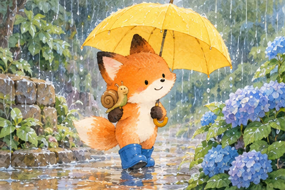
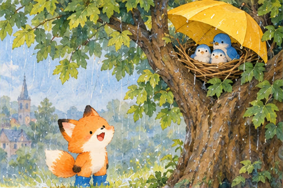
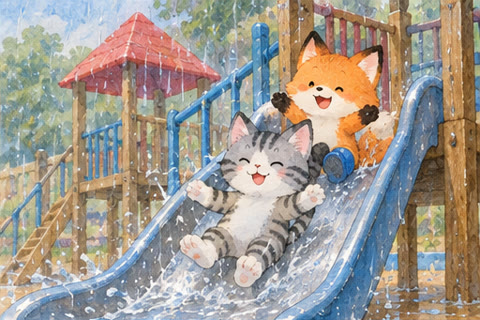
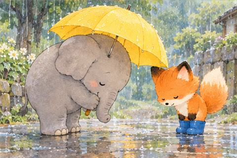
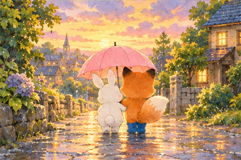
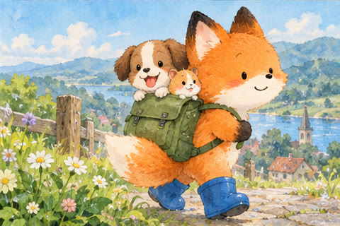
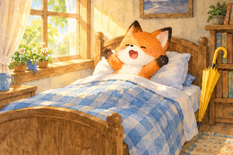
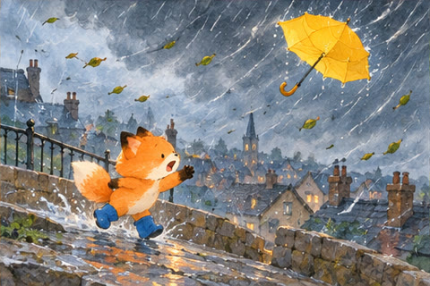
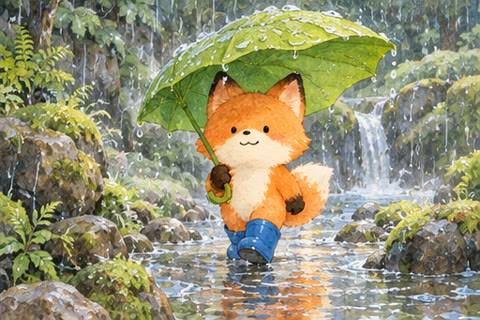
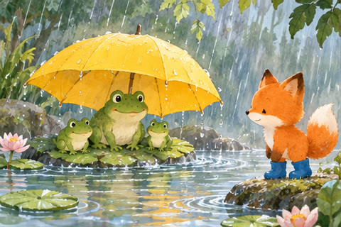
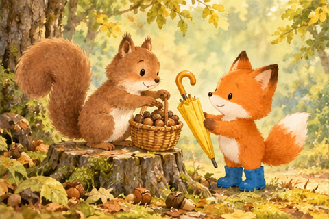
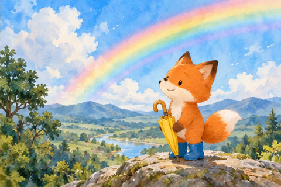
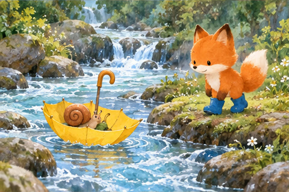
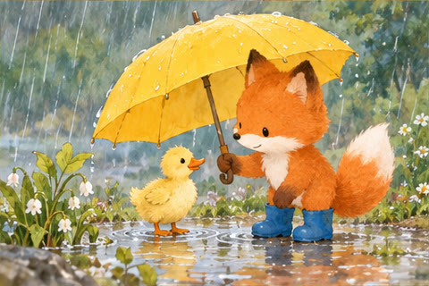
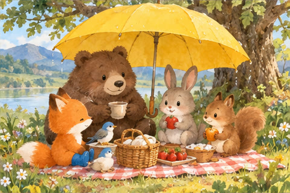
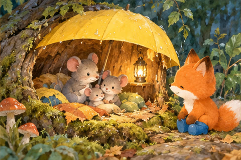
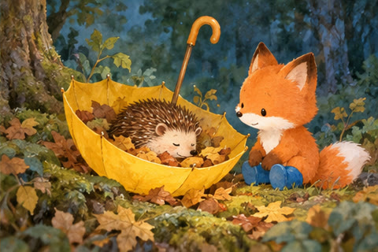
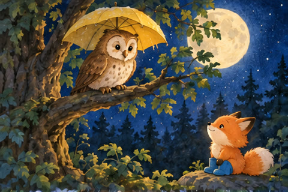
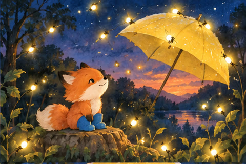
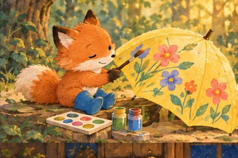
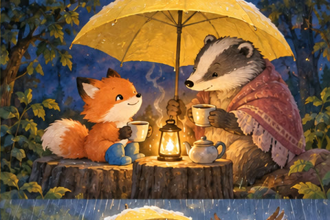
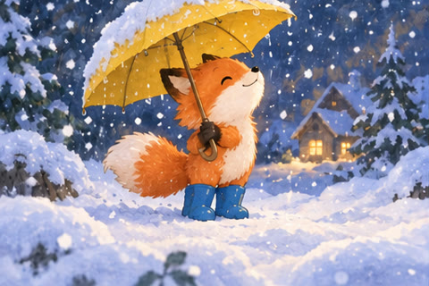
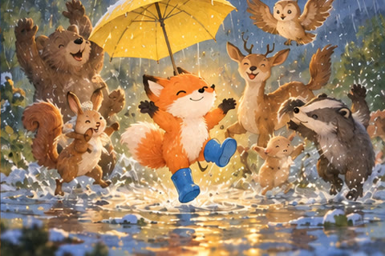
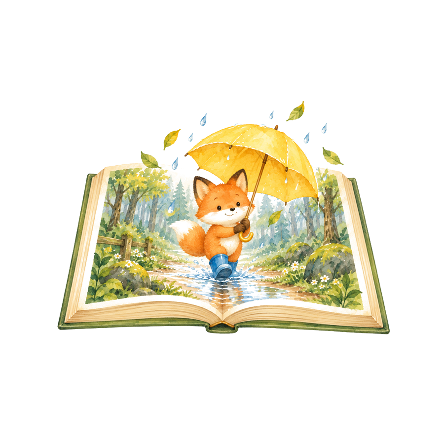
23개의 결말시작02
오늘의 학습 순서
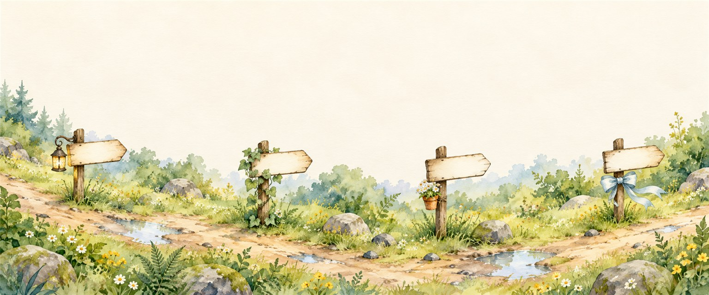
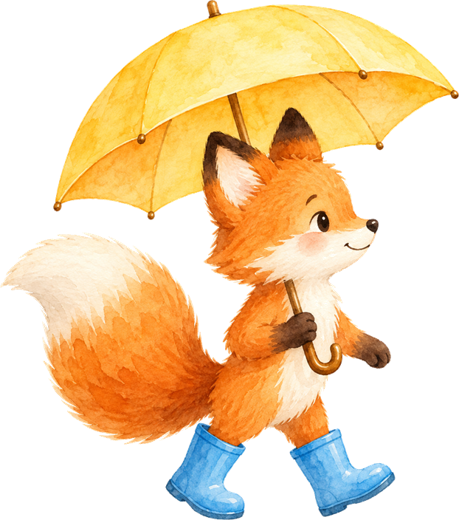
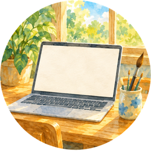
수업 사례자유 그림책, 1차시, 2차시를 어떻게 했고 무엇이 나왔는지 보여 드려요.
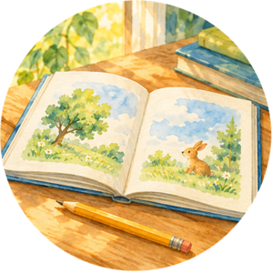
실습 1계정을 알아보고, 그림책에 꼭 필요한 기능 다섯 가지를 직접 해 봐요.
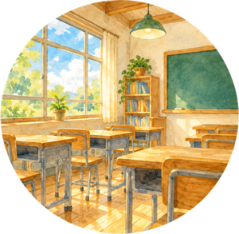
실습 2장면 1~3을 읽고 장면 4·5를 나만의 이야기로 써서, 그림까지 만들어 그림책을 완성해요.
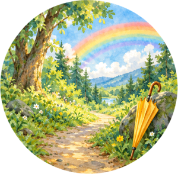
실습 3방금 만든 그림책으로 교실을 만들고, 1·2차시 자료를 만들어 배정하고, 검토까지 해 봐요.
시작03
휴대폰으로 참여하기
QR로 들어오면 투표와 퀴즈를 휴대폰으로 해요.
a51477859.github.io/jisiksaemteo-canva-picturebook
휴대폰 카메라로 찍으면 바로 열려요 · 투표와 퀴즈를 여기서
시작04
화면 준비하기
설명 시간에는 Zoom을 보고, 실습 시간에는 교안을 보면서 Canva로 따라 해요.
- 01모니터가 두 대라면
한쪽에는 Zoom과 교안 창, 다른 쪽에는 Canva를 띄워요.
- 02모니터가 한 대라면
컴퓨터에는 Zoom과 Canva를, 교안은 휴대폰으로 열어요.
- 03휴대폰이 없다면
실습 때 화면을 반으로 나눠 교안과 Canva를 함께 띄워요.
팁다음 장부터 경우마다 어떻게 하는지 움직이는 그림으로 보여 드려요. 내 경우만 보셔도 돼요.
시작05
모니터가 두 대라면
- 1왼쪽은 Zoom, 오른쪽은 Canva
왼쪽 모니터에 Zoom 창을 띄우고 교안 창은 그 뒤에 열어 둬요.
- 2설명 시간에는 Zoom을 봐요
들으면서 틈틈이 오른쪽 Canva를 눌러 봐도 좋아요.
- 3실습 때는 교안 창을 위로
작업 표시줄에서 교안 창을 누르면 Zoom 위로 올라와요.
- 4교안을 넘겨 보며 따라 해요
앞 장을 넘겨 방법을 보고 오른쪽 Canva에서 따라 해요.
- 5끝나면 강사 따라가기
직접 넘기면 꺼져 있어요. 다시 누르면 제가 보는 장으로 와요.
- 6Zoom 창을 다시 위로
작업 표시줄의 Zoom을 누르고 다음 설명을 들어요.
시작06
모니터 한 대와 휴대폰이라면
- 1컴퓨터는 Zoom, 휴대폰은 교안
QR로 교안을 열면 강사 따라가기가 켜져 있어요. Canva는 Zoom 뒤에 열어 둬요.
- 2설명 시간에는 Zoom을 봐요
제가 장을 넘기면 휴대폰 교안도 같이 넘어가요.
- 3실습 때는 Zoom 창을 내려요
Zoom 창 오른쪽 위 —를 누르면 뒤에 있던 Canva가 보여요. 소리는 계속 들려요.
- 4휴대폰으로 넘겨 보며 따라 해요
휴대폰에서 앞 장을 보고 컴퓨터 Canva에서 따라 해요.
- 5끝나면 강사 따라가기
휴대폰 위쪽 단추를 다시 누르면 제가 보는 장으로 와요.
- 6Zoom 창을 다시 위로
작업 표시줄의 Zoom을 누르고 다음 설명을 들어요.
시작07
휴대폰 없이 화면을 반으로 나눈다면
- 1휴대폰이 없을 때만
설명 시간에는 Zoom을 크게 봐요. Canva가 좁아지니 휴대폰이 있으면 그쪽이 편해요.
- 2실습 때는 교안 창을 위로
작업 표시줄에서 교안 창을 눌러 올려요.
- 3화면을 반으로 나눠요
교안 창에서 Windows 키 + ←, Canva 창에서 Windows 키 + →를 눌러요.
- 4왼쪽 교안을 보며 따라 해요
앞 장을 넘겨 방법을 보고 오른쪽 Canva에서 따라 해요.
- 5끝나면 강사 따라가기
다시 누르면 제가 보는 장으로 와요.
- 6Zoom 창을 다시 위로
작업 표시줄의 Zoom을 누르고 다음 설명을 들어요.
시작08
Canva, 얼마나 써 보셨나요?
하나만 눌러 주세요. 결과는 바로 같이 봐요.
실시간 투표 · 0명 참여
팁처음 써 보시는 분이 많으면 천천히, 익숙한 분이 많으면 조금 빠르게 진행할게요.
시작09
지금 쓰는 Canva 계정은?
하나만 눌러 주세요.
실시간 투표 · 0명 참여
팁무료 계정이어도 오늘 실습은 끝까지 할 수 있어요. 그림을 만드는 방법은 계정에 따라 실습 1에서 따로 알려 드릴게요.
1. 우리 반 수업 사례 · 오늘의 순서10
오늘의 학습 순서
자유 그림책, 1차시, 2차시를 어떻게 했고 무엇이 나왔는지 보여 드려요.
계정을 알아보고, 그림책에 꼭 필요한 기능 다섯 가지를 직접 해 봐요.
장면 1~3을 읽고 장면 4·5를 나만의 이야기로 써서, 그림까지 만들어 그림책을 완성해요.
방금 만든 그림책으로 교실을 만들고, 1·2차시 자료를 만들어 배정하고, 검토까지 해 봐요.
1. 우리 반 수업 사례11
먼저 우리 반에서 실제로 해 본 그림책 수업을 보여 드릴게요.
먼저 우리 반에서 실제로 해 본 수업부터 보여 드릴게요.
자유 그림책, 1차시, 2차시 순서로 어떻게 했고 무엇이 나왔는지 볼게요!
우리 반 수업 사례
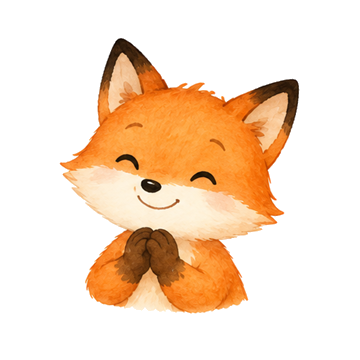
1. 우리 반 수업 사례 · 한눈에12
우리 반 수업 흐름
결과물부터 보여 드릴게요. 세 번의 수업에서 이런 책이 나왔어요.
- 1먼저 해 본 수업 · 자유 그림책
줄거리부터 그림까지 학생이 모두 정했어요. 23명 중 10편 정도가 완성됐어요.
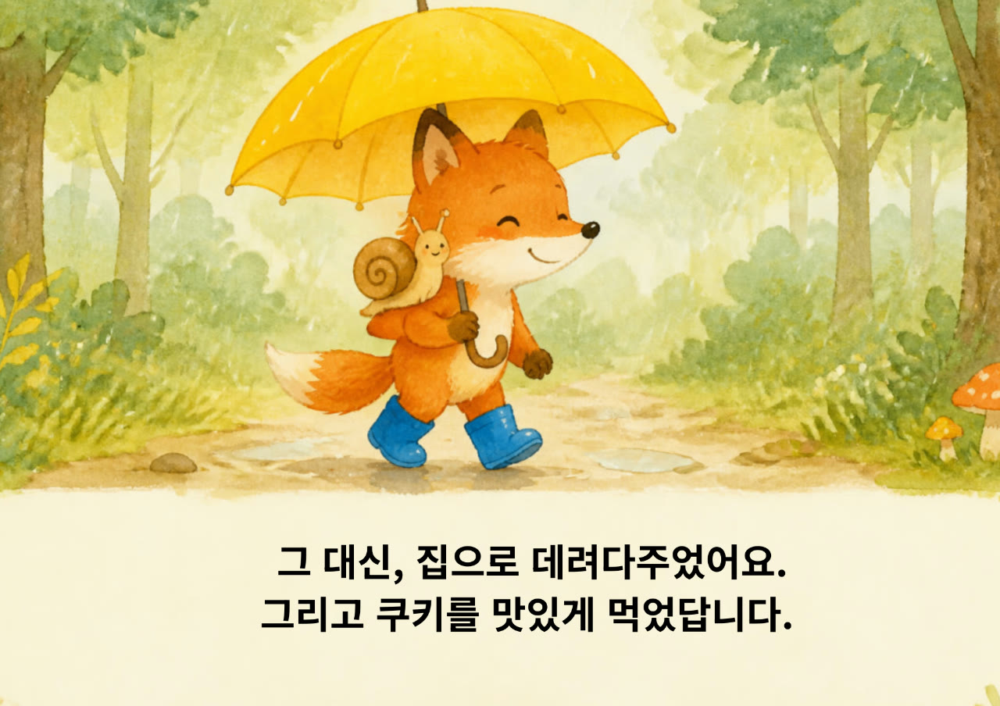
21차시 · 같은 그림에 글 쓰기그림 6장은 같았지만 제목과 이야기는 학생마다 달랐어요. 19권이 나왔어요.
- 32차시 · 나만의 이야기로 다시 쓰기
장면 1~3을 읽고, 그 뒤 이야기와 그림을 학생이 만들었어요. 클래스보드에 13편이 올라왔어요.
- 4해 보고 느낀 점
잘된 점과 아쉬운 점, 다음 수업에서 해 볼 것을 나눠요.
1. 우리 반 수업 사례 · 먼저 해 본 수업 · 자유 그림책 만들기13
자유 그림책 만들기
1·2차시보다 먼저 해 본 수업이에요. 10월 연구회 분과 발표에서 소개했어요.
- 1THINK 줄거리 짜기
컴퓨터를 켜기 전에 학습지에 누가, 어디서, 무슨 일이, 어떻게 끝나는지 적었어요.
- 2PLAN 스토리보드
줄거리를 장면으로 나누고, 장면마다 그림과 글을 미리 정했어요.
- 3CREATE Canva로 만들기
장면을 글로 써서 AI에게 그림을 부탁하고, 맞는 그림을 골라 책으로 엮었어요.
- 4SHARE 함께 읽기
완성한 그림책을 클래스보드에 올려 서로 읽었어요.
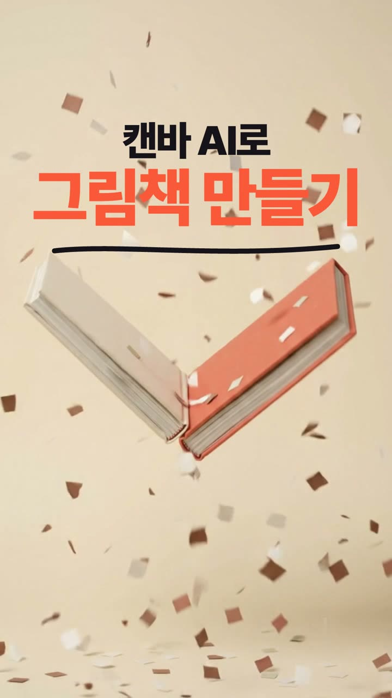
강의 때 재생해요1. 우리 반 수업 사례 · 먼저 해 본 수업 · 자유 그림책 만들기14
학생들이 만든 그림책
표지를 누르면 책처럼 넘겨 볼 수 있어요.
23명 중 10편 정도가 끝까지 완성됐어요.
1. 우리 반 수업 사례 · 먼저 해 본 수업 · 자유 그림책 만들기15
자유 그림책을 해 보고 바꾼 것
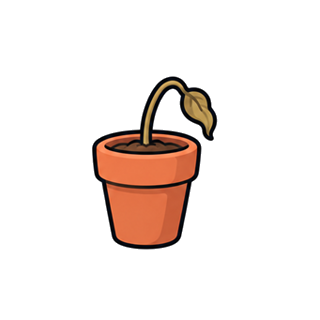
01시간이 모자랐어요줄거리부터 그림까지 다 정하다 보니, 23명 중 10편 정도만 끝까지 완성했어요.
- 02태블릿이 한 세트였어요
일곱 반이 한 세트를 돌려 써서 하루에 몰아서 해야 했어요.
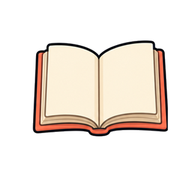
03그래서 1·2차시는 이렇게1차시는 같은 그림 6장에 글만 쓰고, 2차시는 장면 1~3을 주고 그 뒤 이야기를 쓰게 했더니 거의 모두 책을 완성했어요.
1. 우리 반 수업 사례 · 1차시 · 같은 그림에 글 쓰기16
1·2차시에 쓴 그림책 「잃어버린 노란 우산」
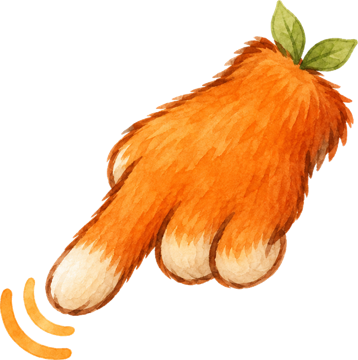
눌러 보기1. 우리 반 수업 사례 · 1차시 · 같은 그림에 글 쓰기17
1차시 수업은 이렇게 했어요
잃어버린 노란 우산 그림 6장은 그대로 주고, 제목과 문장은 모두 학생이 썼어요.
- 1그림 6장을 과제로 받기
문장을 지운 그림책을 Canva 교실 과제로 나눠 줬어요. 학생은 태블릿에서 받아 열었어요.
- 2제목과 문장 쓰기
같은 그림을 보고 학생마다 제목과 쪽마다 문장을 직접 썼어요.
- 3교사에게 보내기로 내기
다 쓴 책은 교사에게 보내기로 냈어요.
- 4클래스보드에 올려 함께 읽기
그림 파일로 저장해 클래스보드에 올리고 친구 책을 읽었어요.
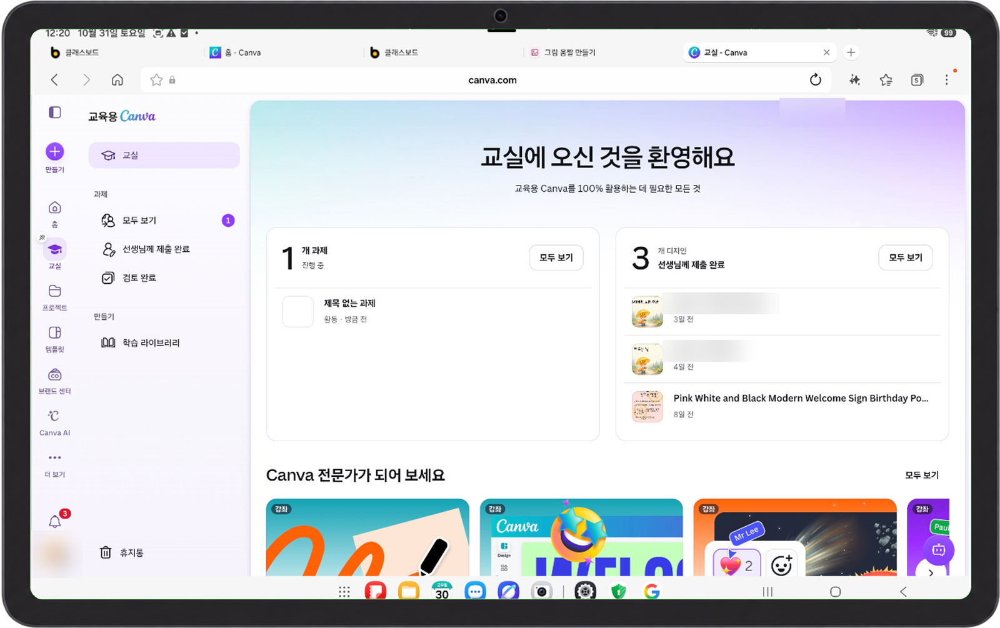
팁자유 그림책 때 Canva를 한 번 익혀서인지 1·2차시는 비교적 빨리 끝났어요.
1. 우리 반 수업 사례 · 1차시 · 같은 그림에 글 쓰기18
1차시 결과: 같은 그림, 다른 제목
같은 그림 6장을 받았는데 제목은 모두 달랐어요. 19권의 표지를 모았어요.
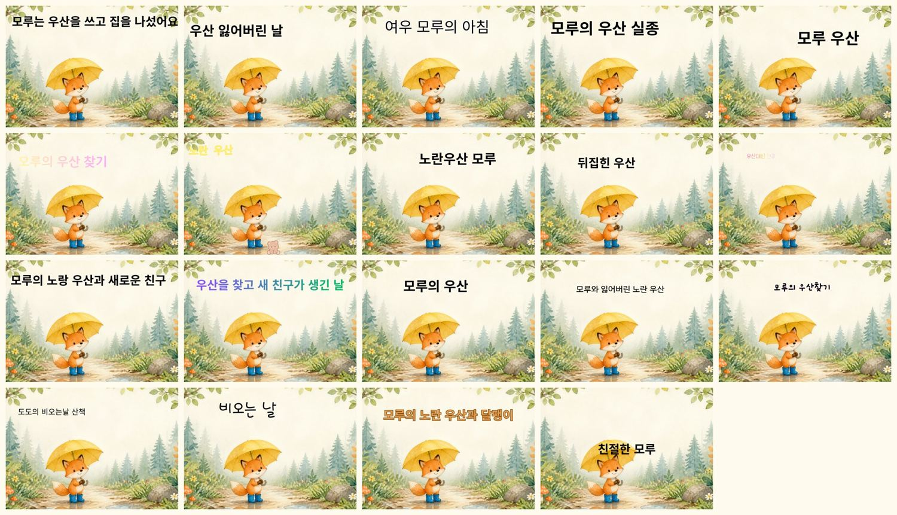
1차시 표지 19장그림은 같고 제목과 글씨는 학생마다 달라요.
1. 우리 반 수업 사례 · 1차시 · 같은 그림에 글 쓰기19
1차시 결과: 책으로 넘겨 보기
표지를 누르면 책처럼 넘겨 볼 수 있어요. 같은 그림인데 이야기는 이렇게 달라요.
그림은 모두 같고, 제목과 문장은 학생이 썼어요.
1. 우리 반 수업 사례 · 2차시 · 나만의 이야기로 다시 쓰기20
2차시 수업은 이렇게 했어요
장면 1~3만 주고, 그 뒤 이야기와 그림은 학생이 만들었어요.
- 1장면 1~3까지 있는 책 받기
표지와 장면 1~3은 있고 장면 4·5는 비어 있는 책을 과제로 나눠 줬어요.
- 2뒷이야기 쓰기
장면 1~3을 읽고 그 뒤 이야기를 학생이 정해 썼어요. 쪽 수도 4쪽부터 10쪽까지 제각각이었어요.
- 3그림은 스타일 매치로
Dream Lab에 장면 1~3 그림을 넣고 스타일 매치로 같은 그림체의 그림을 만들었어요.
- 4먼저 끝낸 친구가 도와요
안내한 순서를 따라 3분의 1이 먼저 해냈고, 그 친구들이 헤매는 친구를 도왔어요.
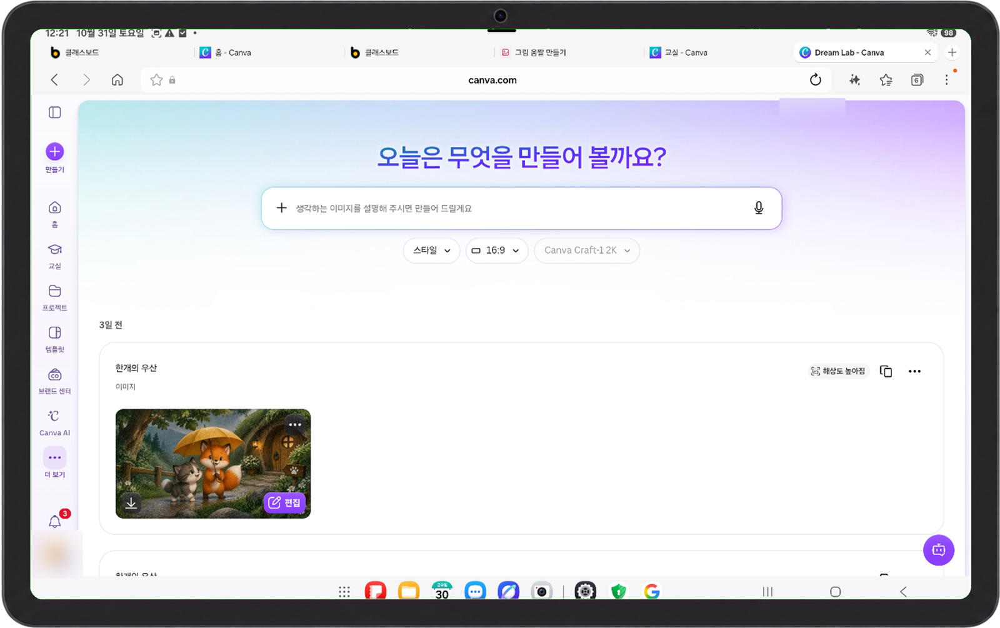
팁만들다가 장면 1~3도 바꾸고 싶다는 아이들이 있었어요. 3학년이라 부담 없이 하도록 허락했어요.
1. 우리 반 수업 사례 · 2차시 · 나만의 이야기로 다시 쓰기21
2차시 결과: 나만의 이야기로 다시 쓰기
장면 1~3은 같지만, 그 뒤 이야기는 4쪽부터 10쪽까지 저마다 달라요. 그림을 누르면 처음부터 넘겨 볼 수 있어요.
1. 우리 반 수업 사례 · 무엇이 달라졌나22
자유 그림책과 2차시 작품 비교
같은 반 아이들이 만든 책이에요. 왼쪽을 눌러 비교해 보세요.
1. 우리 반 수업 사례 · 아이들에게 일어난 배움 1/423
비계 설정
혼자 하기 어려운 일을 해내도록 도와주고, 익숙해지면 도움을 줄이는 일이에요.
비계는 건물을 지을 때 임시로 세우는 발판을 뜻해요.
그림으로 보면
교사가 준 것학생이 만든 것
교사가 주는 도움이 줄고, 학생이 맡는 부분이 늘었어요.
우리 반에서는
1차시에는 그림을 주고 글을 맡겼어요. 2차시에는 장면 1~3만 주고 뒷이야기와 그림까지 맡겼어요.
1. 우리 반 수업 사례 · 아이들에게 일어난 배움 2/424
인지 부하 줄이기
한 번에 생각할 일을 줄여서 중요한 일에 집중하게 하는 거예요.
그림으로 보면
자유 그림책
- 줄거리 정하기
- 그림 만들기
- 글 쓰기
- Canva 배우기
1차시
- 줄거리 정하기
- 그림 만들기
- 글 쓰기
- Canva 배우기
아이 그림은 이해를 돕기 위해 그린 그림이에요.
우리 반에서는
같은 그림을 받은 1차시에는 문장 쓰기에 집중했어요. 같은 장면에서도 아이들의 문장이 저마다 달랐어요.
1. 우리 반 수업 사례 · 아이들에게 일어난 배움 3/425
근접발달영역
혼자는 어렵지만 도움을 받으면 해낼 수 있는 범위를 말해요.
그림으로 보면
있는 일
친구의 도움으로 zip 압축 풀기를 해냈어요.
도움받아 해 본 일은 점점 혼자 할 수 있는 일이 돼요.
우리 반에서는
순서를 따라 3분의 1이 먼저 해냈고, 그 친구들이 헤매는 친구를 도왔어요. 가장 어려워한 zip 압축 풀기도 친구에게 배워 해냈어요.
1. 우리 반 수업 사례 · 아이들에게 일어난 배움 4/426
복합양식 문식성
글과 그림을 함께 써서 뜻을 만들고 읽어 내는 능력이에요.
그림으로 보면
그림+글=이야기
같은 그림에 다른 문장을 쓰니 이야기가 달라졌어요.
우리 반에서는
2차시에는 앞 장면과 닮은 그림을 고르고, 그 그림에 맞는 문장을 써서 이야기를 이어 갔어요.
1. 우리 반 수업 사례 · 무엇이 달라졌나27
교육과정과 이어 보기
2022 개정 국어 3~4학년군 성취기준과 우리 반 활동을 맞춰 봤어요.
4국05-01인물과 이야기의 흐름을 중심으로 작품을 감상한다.
장면 1~3을 읽고 인물과 이야기의 흐름을 따라 뒷이야기를 정했어요.
4국06-02매체를 활용하여 간단한 발표 자료를 만든다.
Canva로 그림과 글을 넣어 그림책을 만들었어요.
4국06-03매체 소통 윤리를 고려하여 매체 자료를 활용하고 공유한다.
클래스보드에 작품을 올리고 친구 책을 함께 읽었어요.
1. 우리 반 수업 사례 · 해 보고 느낀 점28
수업해 보고 느낀 점
- 01잘된 점
같은 그림으로 시작해도 제목과 글은 모두 달랐어요. 뒷이야기를 맡기니 새로운 인물도 많이 나왔어요.
- 02아쉬웠던 점
빛나는 글자, 무지개 글자처럼 예쁘지만 그림 위에서 잘 안 보이는 글자 효과를 많이 골랐어요.
- 03다음 수업에서는
올리기 전에 글자가 잘 보이는지 확인하고, 그 글자를 고른 이유도 한 줄 남기게 할 거예요.
2. 실습 1 · 기본 기능 · 오늘의 순서29
오늘의 학습 순서
자유 그림책, 1차시, 2차시를 어떻게 했고 무엇이 나왔는지 보여 드려요.
계정을 알아보고, 그림책에 꼭 필요한 기능 다섯 가지를 직접 해 봐요.
장면 1~3을 읽고 장면 4·5를 나만의 이야기로 써서, 그림까지 만들어 그림책을 완성해요.
방금 만든 그림책으로 교실을 만들고, 1·2차시 자료를 만들어 배정하고, 검토까지 해 봐요.
2. 실습 1 · 기본 기능30
먼저 Canva가 어떤 도구인지 알아보고, 그림책 만들기에 필요한 기본 기능을 하나씩 직접 해 볼 거예요.
먼저 Canva가 어떤 도구인지 알아볼게요.
그다음 그림책 만들 때 꼭 필요한 기본 기능을 하나씩 직접 해 봐요!
실습 1 · 기본 기능
2. 실습 1 · 기본 기능31
Canva는 어떤 도구일까
- 01디자인을 한곳에서
포스터, 발표 자료, 문서, 영상까지 한 화면에서 만들고 함께 고쳐요.
- 02템플릿으로 시작
이미 만들어진 디자인을 골라 글과 그림만 바꾸면 돼요.
- 03AI 기능
글을 써 주고, 그림을 그려 주고, 그림 일부를 고쳐 줘요.
- 04수업 도구
교실에서 반을 만들고 과제를 나눠 주고 제출받아요.
2. 실습 1 · 기본 기능 · 퀴즈32
OX 퀴즈
무료 Canva로도 AI 그림을 뽑을 수 있다?
정답 A 뽑을 수 있어요. 다만 횟수가 적어요. 교육용 계정은 훨씬 넉넉해요.
실시간 투표 · 0명 참여
2. 실습 1 · 기본 기능33
무료 계정으로 할 수 있는 것
- 01그림책 만들기
책 틀을 만들고 글을 넣고 쪽을 복제하는 것은 모두 무료로 돼요.
- 02AI 그림
Magic Media도 쓸 수 있지만 사용 횟수가 적어요.
- 03저장하고 나누기
PDF, 그림 파일, PPTX로 내려받을 수 있어요.
팁한쇼 파일로는 바로 저장되지 않아요. PPTX로 받은 뒤 한쇼에서 열어 보세요.
2. 실습 1 · 기본 기능34
무료 계정으로도 오늘 연수는 충분해요!
계정에 따라 그림을 만드는 곳만 달라요.
- 01교육용 계정
Canva Magic Media로 그림을 만들어요. 무료 계정의 10배를 쓸 수 있지만 한 달 한도가 있어요.
- 02무료 계정
Canva AI는 한 달에 20번 안팎만 쓸 수 있어요(2026년 10월 기준).
- 03사용량이 다 됐을 때
자료 페이지의 그림 6장을 넣으면 책은 끝까지 만들 수 있어요.
팁Google Flow는 무료 계정도 그림을 하루 수백 장까지 만들 수 있어요. 위 단추를 눌러 미리 열어 두세요.
2. 실습 1 · 기본 기능 · 퀴즈35
OX 퀴즈
교육용 Canva는 교사라면 누구나 무료다?
정답 B 재직 중인 교사라는 확인을 받아야 해요. 학교 메일이나 재직 서류로 신청해요.
실시간 투표 · 0명 참여
2. 실습 1 · 기본 기능36
무료 계정과 교육용 계정 비교
| 무료 계정 | 교육용 계정 | |
|---|---|---|
| 왕관 표시 유료 소재·기능 | 일부만 써요 | 대부분 쓸 수 있어요 |
| AI 글·그림 | 횟수가 적어요 | 더 넉넉해요 (한도는 있어요) |
| 교실·배정 | 없어요 | 반을 만들고 과제를 나눠 줘요 |
| 학생 계정 | 없어요 | 교사가 초대하고 AI 권한도 정해요 |
| 다운로드 형식 | PDF, PNG, JPG, PPTX, MP4 | 무료와 같아요 (한쇼·한글 파일은 둘 다 안 돼요) |
- 1신청 대상
유치원과 초·중·고등학교에 재직 중인 교사가 신청할 수 있어요. 대학, 학원, 학부모는 해당하지 않아요.
- 2Pro 기능
왕관 표시가 붙은 유료 소재와 배경 제거, 크기 조정 같은 기능을 쓸 수 있어요.
- 3교실 · 학생 초대
반을 만들고 학생을 초대해 과제를 나눠 주고 검토해요.
- 4AI 한도 · 3년마다 재인증
AI 기능은 무제한이 아니고, 3년마다 재인증 메일이 와요.
2. 실습 1 · 기본 기능 · 실습 준비 1/338🖥 Canva 창 · 연습 디자인
실습 준비: 그림 파일 내려받기
- 1자료 페이지 열기
위 단추를 누르거나 QR을 휴대폰으로 찍어요. 채팅창에 올린 주소를 눌러도 돼요.
- 2그림 6장 모두 받기 누르기
압축 파일(zip)이 내려받아져요.
- 3압축 풀기
파일을 오른쪽 클릭해 압축 풀기를 누르면 cover, page1~page5 그림이 나와요.
2. 실습 1 · 기본 기능 · 실습 준비 2/339
A4 가로 새 디자인 여는 방법
- 1맞춤형 크기
홈 아이콘 줄 오른쪽에 있어요
- 2문서(A4, Landscape)
숫자 넣지 말고 한 번만 눌러요
- 3빈 편집 화면
새 탭에 A4 가로 쪽이 열려요
팁오늘은 템플릿 없이 A4 가로 빈 쪽으로 시작해요. 그래야 그림이 쪽을 가득 채워요.
2. 실습 1 · 기본 기능 · 실습 준비 2/340실습 · 1분🖥 Canva 창 · 연습 디자인
[실습 준비] A4 가로 새 디자인 열기
Canva 홈에서 A4 가로 크기의 빈 디자인을 하나 열어 보세요.
- canva.com에 로그인했나요?
- 맞춤형 크기 → 문서(A4, Landscape)를 눌렀나요?
- 빈 A4 가로 편집 화면이 열렸나요?
완료 기준왼쪽 메뉴와 가운데 가로 쪽이 보이면 다 됐어요.
막히면
- 로그인이 안 돼요
- 오늘은 강사 화면을 보며 따라오시고, 연수가 끝난 뒤 가입하셔도 돼요.
- 새 화면이 안 보여요
- 브라우저 위쪽에 새 탭이 열렸는지 확인해 보세요.
지금 해 볼 것A4 가로 빈 디자인을 열어요1분
2. 실습 1 · 기본 기능 · 실습 준비 3/341🖥 Canva 창 · 연습 디자인
[실습 준비] 받은 그림 올리기
내려받은 그림을 올려 첫 쪽을 표지로 만들어요. 제목은 다음 실습에서 직접 써요.
- 1업로드 항목 → 파일 업로드
왼쪽 업로드 항목을 누르고 보라색 파일 업로드를 눌러요.
- 2내려받은 그림 고르기
파일 고르는 창이 떠요. 다운로드에서 cover를 누르고, Ctrl을 누른 채 page1도 눌러 열기를 눌러요. cover는 글자 없는 표지 그림이에요.
- 3표지 그림 누르기
왼쪽에 올라온 cover를 한 번 누르면 쪽 가운데에 들어가요.
- 4이미지를 배경으로 설정
쪽에 들어간 그림을 오른쪽 클릭해서 골라요. 그림이 쪽을 가득 채워요.
2. 실습 1 · 기본 기능42
편집 화면 둘러보기
방금 만든 표지 쪽으로 화면을 둘러봐요. 글을 고르면 나오는 도구는 다음 실습에서 봐요.
- 1왼쪽 메뉴
템플릿, 요소, 텍스트, 업로드 항목, 앱, Magic Media가 모여 있어요.
- 2가운데 쪽 · 아래 쪽 목록
가운데에서 고르고 바로 고쳐요. 아래에는 쪽 순서가 보여요.
- 3그림을 고르면
편집, 바꾸기, 배경 제거, 자르기 메뉴가 나와요.
2. 실습 1 · 기본 기능 · 실습43
이제 그림책 만들기에 꼭 필요한 기능 다섯 가지를 하나씩 해 볼게요.
그림책 만들 때 꼭 필요한 기능 다섯 가지를 해 볼게요.
방금 연 디자인의 첫 쪽에서 해요.
2. 실습 1 · 기본 기능 · 기능 실습 1/5 · 글44🖥 Canva 창 · 연습 디자인
[실습] 글 넣고 꾸미기
표지 그림 위쪽 빈 하늘에 제목을 넣고 꾸며요.
- 1텍스트 → 제목 추가
왼쪽 텍스트에서 제목 추가를 누르면 쪽에 글상자가 생겨요. 잃어버린 노란 우산이라고 써요.
- 2글꼴 이름 누르기
둥글고 단순한 고딕체가 읽기 좋아요. (예: Noto Sans Kr)
- 3크기 − +
제목은 크게 써요. 화면에서는 64로 키웠어요.
- 4글자색 A
밝은 글 자리에 짙은 색 글자를 써요.
- 5한 걸음 떨어져 보기
오른쪽 아래 전체 화면 단추로 크게 보며 읽어 봐요.
2. 실습 1 · 기본 기능 · 기능 실습 2/5 · 그림45🖥 Canva 창 · 연습 디자인
[실습] 새 쪽에 그림 넣기
방금 표지에서 한 그대로 다음 쪽에 page1 그림을 넣고, 장면 1 문장도 써요.
- 1쪽 목록의 +
아래 쪽 목록 끝의 +를 누르면 빈 쪽이 하나 생겨요.
- 2page1 그림 누르기
왼쪽 업로드 항목에서 page1을 한 번 누르면 새 쪽 가운데에 들어가요.
- 3이미지를 배경으로 설정
그림을 오른쪽 클릭해서 골라요. 그림이 쪽을 가득 채워요.
- 4장면 1 문장 쓰기
텍스트 → 텍스트 상자 추가로 아래 빈자리에 비 오는 아침, 모루는 노란 우산을 쓰고 학교에 갔어요.를 써요. 본문은 28pt 정도가 읽기 좋아요.
2. 실습 1 · 기본 기능 · 기능 실습 3/5 · 쪽46🖥 Canva 창 · 연습 디자인
[실습] 쪽 복제하고 순서 바꾸기
장면 1 쪽을 복제하면 장면 2 쪽 틀이 돼요. 그림과 문장만 바꾸면 돼요.
- 1쪽 목록의 ⋯
아래 쪽 목록의 그림에 마우스를 올리면 오른쪽 위에 보여요.
- 2페이지 복제
그림과 문장까지 같은 쪽이 바로 옆에 한 장 더 생겨요. (Ctrl+D)
- 3끌어서 순서 바꾸기
쪽 그림을 누른 채로 원하는 자리까지 끌어 놓아요.
2. 실습 1 · 기본 기능 · 퀴즈47
OX 퀴즈
페이지 복제를 하면 그림과 글이 그대로 한 장 더 생긴다?
정답 A 그림, 글, 꾸밈까지 똑같은 쪽이 바로 옆에 생겨요. 장면마다 같은 틀을 쓸 때 편해요.
실시간 투표 · 0명 참여
2. 실습 1 · 기본 기능 · 기능 실습 4/5 · 움직임48🖥 Canva 창 · 연습 디자인
[실습] 쪽에 움직임 넣기
- 1위 도구 모음 애니메이션
쪽 빈 곳을 누른 뒤 위쪽 애니메이션을 눌러요.
- 2Magic Animate
모든 쪽에 어울리는 움직임을 한 번에 넣어 줘요.
- 3추천에서 고르기
심플함, 세련됨, 즐거움 중 하나를 누르면 쪽 전체에 들어가요.
- 4일반은 하나씩
떠오르기, 나타내기처럼 하나씩 눌러 미리 볼 수 있어요.
2. 실습 1 · 기본 기능 · 기능 실습 5/5 · 소리49🖥 Canva 창 · 연습 디자인
[실습] 문장을 AI 목소리로 읽어 주기
- 1글상자 오른쪽 클릭
장면 1 문장 글상자를 오른쪽 클릭하고 Magic Write → AI 음성 생성
- 2읽을 문장 확인
고른 글상자의 문장이 들어와 있어요.
- 3한국어 목소리 고르기
민준, 유나 두 가지 목소리가 있어요.
- 4AI 음성 생성
쪽 아래에 소리 줄이 생겨요
- 5소리 줄을 눌러 다듬기
구간 변경 · 페이드
2. 실습 1 · 기본 기능50
더 알아 두면 좋은 기능
참고로 알아 두세요. 따라 하지 않으셔도 돼요.
| 해 볼 것 | 이렇게 돼요 | 어디서 |
|---|---|---|
| 영어 그림책 | 쪽을 통째로 번역해 새 쪽으로 | 글상자 오른쪽 클릭 → 텍스트 번역 |
| 그림 고치기 | 말로 시켜서 그림 일부를 바꿔요 | 이미지 편집 → Magic Edit |
| 누르는 그림책 | 단추를 누르면 결말이 바뀌는 화면 | Canva AI → 코드 |
| 반 전체 틀 · 대량 제작 | 같은 틀을 반 전체에 쓰고, 이름만 바꿔 여러 장 만들어요. | 공유 → 브랜드 템플릿 · 앱 대량 제작 |
3. 실습 2 · 나만의 이야기와 글 · 오늘의 순서51
오늘의 학습 순서
자유 그림책, 1차시, 2차시를 어떻게 했고 무엇이 나왔는지 보여 드려요.
계정을 알아보고, 그림책에 꼭 필요한 기능 다섯 가지를 직접 해 봐요.
장면 1~3을 읽고 장면 4·5를 나만의 이야기로 써서, 그림까지 만들어 그림책을 완성해요.
방금 만든 그림책으로 교실을 만들고, 1·2차시 자료를 만들어 배정하고, 검토까지 해 봐요.
3. 실습 2 · 나만의 이야기와 글52
이제 「잃어버린 노란 우산」 장면 1~3을 읽고, 장면 4·5를 나만의 이야기로 만들어 그림책을 완성해 볼 거예요.
이제 잃어버린 노란 우산 장면 1~3을 함께 읽어요.
그리고 장면 4·5를 나만의 이야기로 만들어 그림책을 완성해요!
실습 2 · 심화 기능
3. 실습 2 · 나만의 이야기와 글53🖥 Canva 창 · 그림책 틀
실습 2 진행 순서
- 1그림책 틀 열기
장면 1~3이 들어 있는 틀을 내 디자인으로 가져와요.
- 2장면 4·5 글 쓰기
장면 4·5에 나만의 이야기를 쓰고 Magic Write로 다듬어요.
- 3장면 4·5 그림 만들기
그림 요청문을 조각별로 배우면서 장면 4·5 그림을 만들어요.
- 4책으로 완성하고 나누기
6쪽을 완성해 PDF로 저장하고, 클래스보드에 올려 함께 읽어요.
3. 실습 2 · 나만의 이야기와 글 · 실습 준비54🖥 Canva 창 · 새 탭
[실습 준비] 그림책 틀 열기
오늘 실습 2는 모두 이 틀에서 해요.
- 1틀 열기
위 단추를 누르거나, 모루가 든 QR을 휴대폰으로 찍어요. 채팅창에 올린 주소를 눌러도 돼요.
- 2보라색 템플릿 편집 누르기
내 Canva에 내 것으로 한 부가 만들어져요.
- 3여섯 쪽 확인하기
표지와 장면 1~3에는 그림과 글이 들어 있고, 장면 4·5는 비어 있어요.
3. 실습 2 · 나만의 이야기와 글55
장면 1~3 함께 읽기
- ?장면 4오늘 만들 장면
- ?장면 5오늘 만들 장면
여기는 여러분이
채워 주세요!
3. 실습 2 · 나만의 이야기와 글 · 나만의 이야기56
뒷이야기를 떠올리게 하는 질문
카드를 누르면 예시가 보여요.
3. 실습 2 · 나만의 이야기와 글57실습 · 4분🖥 Canva 창 · 그림책 틀 · 장면 4 쪽
[실습] 장면 4·5 글 쓰기
그림책 틀의 장면 4, 장면 5 쪽 글상자에 한두 문장씩 써 보세요.
- 모루의 우산은 누구에게 있었을까요?
- 모루는 어떻게 행동하게 될까요?
- 장면 4와 장면 5 쪽 글상자에 문장을 썼나요?
완료 기준두 쪽에 문장이 들어가면 다 됐어요. 한두 분은 채팅창에 소개해 주세요.
막히면
- 생각이 안 나요
- 우산은 지금 누구에게 있을까?부터 생각해 보세요.
- 앞 이야기가 기억나지 않아요
- 틀의 장면 1~3 쪽을 넘겨 보면 그림과 글이 그대로 있어요.
지금 해 볼 것장면 4와 장면 5 쪽에 문장을 써요4분
3. 실습 2 · 나만의 이야기와 글 · Magic Write58
Magic Write는 어떤 도구일까
- 01Canva 안의 글쓰기 AI
부탁하는 글을 쓰면 문장을 만들어 주고, 있는 글을 다듬어 줘요.
- 02여는 곳
쓴 글은 글상자를 오른쪽 클릭 → Magic Write. 새 글은 왼쪽 텍스트 → Magic Write
- 03할 수 있는 것
새로 쓰기, 짧게 줄이기, 길게 늘리기, 말투 바꾸기, 맞춤법 다듬기
3. 실습 2 · 나만의 이야기와 글 · Magic Write59
Magic Write로 내 글 다듬는 방법
- 1글상자 오른쪽 클릭
오른쪽 클릭 메뉴 맨 아래에 Magic Write가 있어요.
- 2텍스트 재작성
같은 뜻을 다른 말로 바꿔 줘요. 짧게 줄이기, 더 재미있게도 있어요.
- 3결과 보기
원래 문장 아래에 바뀐 문장이 나와요.
- 4바꾸기 또는 아래에 추가
비교하려면 아래에 추가를 눌러 두 문장을 나란히 봐요.
주의원고의 “놀랐어요”가 “놀랐습니다”로 바뀌었어요. 말투가 바뀌지 않았는지도 같이 봐요.
3. 실습 2 · 나만의 이야기와 글60실습 · 4분🖥 Canva 창 · 그림책 틀 · 장면 4·5 쪽
[실습] 장면 4·5 글 다듬기
장면 4·5에 쓴 문장을 Magic Write로 다듬고, 마음에 드는 문장을 골라 보세요.
- 내가 쓴 문장을 Magic Write에 넣었나요?
- 받은 문장과 내 문장을 비교해 봤나요?
- 최종 문장을 골라 내 이야기에 맞게 고쳤나요?
- 왜 그 문장을 골랐는지 한 줄로 남겼나요?
완료 기준최종 문장이 쪽에 들어가면 다 됐어요.
막히면
- Magic Write가 없어요
- Magic Write 없이 직접 고쳐 써도 괜찮아요.
- 쓴 문장이 없어요
- 원래 원고의 장면 4 문장으로 연습해 보세요.
지금 해 볼 것장면 4·5 문장을 다듬어요4분
3. 실습 2 · 나만의 이야기와 글 · Magic Write · 수업 활용61
Magic Write로 새 글 받는 방법
수업 활용 예시는 모두 이 창에서 받았어요.
- 1텍스트 → Magic Write
왼쪽 텍스트를 누르면 맨 위에 Magic Write 단추가 있어요.
- 2요청 쓰기
글쓰기 작업을 설명해 주세요 칸에 다섯 낱말 넘게 써요.
- 3결과 확인
→ 단추를 누르면 몇 초 뒤에 문장이 나와요.
- 4삽입 또는 비슷한 버전
마음에 들면 삽입, 다른 문장을 보고 싶으면 비슷한 버전을 눌러요.
3. 실습 2 · 나만의 이야기와 글 · Magic Write · 수업 활용62
생각을 문장으로 표현하기 어려운 학생을 위해
- 01낱말만 있어도 시작할 수 있어요
떠올린 낱말 몇 개를 넣으면 문장으로 만들어 줘요.
- 02잘 쓰는 학생에게도 도움이 돼요
내가 쓴 글과 비교하면서 더 나은 표현을 골라요.
- 03마지막 문장은 학생이 정해요
받은 문장을 그대로 쓰지 않고, 내 이야기에 맞게 고쳐요.
3. 실습 2 · 나만의 이야기와 글 · Magic Write · 수업 활용63
AI에게 잘 요청하는 방법
누가 읽을지, 얼마나 길게, 어떤 말투로 쓸지 정해 주기!
막연한 요청
여우가 우산을 잃어버린 그림책 문장 써 줘
어느 비 오는 날, 작은 여우는 숲속을 산책하며 즐거운 시간을 보내고 있었습니다. 하지만 갑자기 비가 세차게 쏟아지기 시작했고, 여우는 급히 우산을 펼쳤습니다. 비를 피하며 걷던 여우는 우연히 아름다운 꽃밭을 발견하고, 그곳에서 한참을 놀다 우산을 놓고 온 것을 깜빡하고 말았습니다. …(다섯 문장 더)
길고, 합쇼체에, 원고에 없는 꽃밭까지 생겼어요
조건을 넣은 요청
초등 1학년이 읽을 그림책 문장이야. 여우 모루가 집에 가는 길에 노란 우산이 없어진 걸 알고 놀라는 장면을, 한 문장 15자 안팎, 해요체로, 어려운 낱말 없이 두 문장으로 써 줘.
모루는 집에 가다 우산이 없어요. 깜짝 놀랐어요!
짧고 해요체예요. 그런데 “노란”이 빠졌고 문장이 어색해요
실제 Canva Magic Write 결과 · 2026.10.25
3. 실습 2 · 나만의 이야기와 글 · Magic Write · 수업 활용 164
낱말 몇 개로 문장 만들기
초등 3학년이 쓴 낱말이야: 우산, 달팽이, 미안해, 같이. 이 낱말로 그림책 문장 두 개를 해요체로 써 줘.
“비가 내리는 날, 달팽이는 우산을 쓰고 천천히 길을 걸었어요.”
“달팽이가 친구에게 다가가며 말했어요. ‘미안해, 같이 놀자!’”
낱말은 다 썼지만 우산을 쓴 주인공이 달팽이로 바뀌었어요.
실제 Magic Write 결과 · 2026.10.31 강사 교육용 계정
팁수업에서는 받은 문장 중 하나를 고르고, 내 이야기와 다른 부분을 고쳐요.
3. 실습 2 · 나만의 이야기와 글 · Magic Write · 수업 활용 265
고쳐 쓰기 전과 후 비교하기
아래는 초등학생이 쓴 그림책 문장이야. 뜻과 내용은 그대로 두고 맞춤법과 문장만 자연스럽게 다듬어 줘. 모루가 우산을 찾았는데 달팽이가 쓰고잇었다 그래서 모루는 화낼려다가 같이썼다
모루가 우산을 찾았는데, 달팽이가 그 우산을 쓰고 있었다. 그래서 모루는 화를 내려고 하다가, 같이 쓰기로 했다.
뜻은 그대로 두고 맞춤법과 띄어쓰기만 고쳤어요.
실제 Magic Write 결과 · 2026.10.31 강사 교육용 계정
팁수업에서는 바뀐 곳에 표시하고, 왜 바뀌었는지 함께 이야기해요.
3. 실습 2 · 나만의 이야기와 글 · Magic Write · 수업 활용 366
흉내 내는 말 넣어 보기
다음 문장에 흉내 내는 말을 넣어 초등 3학년 그림책 문장으로 다시 써 줘. 모루는 우산을 찾으러 숲길을 걸었어요. 비가 내렸어요. 달팽이가 우산 아래에 있었어요.
모루는 『뚜벅뚜벅』 숲길을 걸으며 우산을 찾고 있었어요.
『후두둑 후두둑』 비가 내렸어요.
그런데 깜짝! 달팽이가 『느릿느릿』 우산 아래에 있었어요.
넣은 말을 『』로 표시해 줘서 밑줄 긋기에 바로 쓸 수 있어요.
실제 Magic Write 결과 · 2026.10.31 강사 교육용 계정
팁수업에서는 AI가 넣은 말에 밑줄을 긋고, 내 문장에는 하나만 골라 넣어요.
3. 실습 2 · 나만의 이야기와 글 · Magic Write · 수업 활용 467
마음을 나타내는 말 넓히기
그림책에서 노란 우산을 잃어버린 여우 모루의 마음을 나타내는 낱말 다섯 개를 초등 3학년이 알 만한 말로 알려 줘. 낱말마다 짧은 예문도 하나씩.
슬픔 · 모루는 노란 우산이 없어서 슬펐어요.
걱정 · 모루는 우산을 어디에 두었는지 몰라 걱정했어요.
외로움 · 우산이 없으니 모루는 외로운 기분이 들었어요.
아쉬움 · 모루는 우산과 함께 비를 맞고 싶었기에 아쉬웠어요.
그리움 · 모루는 노란 우산을 그리워했어요.
4번 예문은 뜻이 어색해요. “이 문장 어디가 이상할까?” 하고 물어보기 좋아요.
실제 Magic Write 결과 · 2026.10.31 강사 교육용 계정
팁수업에서는 인물 마음에 가장 맞는 말을 고르고 이유를 말해요.
3. 실습 2 · 나만의 이야기와 글 · Magic Write · 수업 활용 568
대화글로 바꾸기
다음 장면을 인물들이 주고받는 대화글로 바꿔 줘. 따옴표를 쓰고 누가 말했는지 알 수 있게. 모루는 풀숲 아래에서 달팽이 누리를 만났어요. 누리가 모루의 우산을 쓰고 있었어요. 둘은 우산을 같이 쓰기로 했어요.
“안녕, 누리! 너 내 우산 쓰고 있구나?” 모루가 말했어요.
“안녕, 모루! 맞아. 비가 와서 잠깐 썼어.” 누리가 대답했어요.
“그래? 그럼 우리 같이 쓰자!” 모루가 제안했어요.
원래 장면에 없던 말도 생겼어요. 이야기에 맞는지 학생이 판단하게 해요.
실제 Magic Write 결과 · 2026.10.31 강사 교육용 계정
팁수업에서는 따옴표와 말한 사람을 찾아 표시해요. 만화로 넓히기와도 이어져요.
3. 실습 2 · 나만의 이야기와 글 · Magic Write · 수업 활용 669
결말 대신 질문 받기
나는 초등 3학년이고 그림책 결말을 쓰려고 해. 결말을 대신 써 주지 말고, 내가 스스로 생각할 수 있는 질문 세 개만 해 줘.
1. 모루가 우산을 찾기 위해 어떤 특별한 장소를 더 찾아볼 수 있을까?
2. 우산을 찾는 동안 친구들과의 관계는 어떻게 바뀔까?
3. 우산을 찾은 뒤 모루는 무엇을 알게 될까?
결말은 쓰지 않고 질문만 줬어요. 3학년에게는 조금 길어요.
실제 Magic Write 결과 · 2026.10.31 강사 교육용 계정
팁수업에서는 교사가 질문 하나를 골라 짧게 다듬어 줘요.
3. 실습 2 · 나만의 이야기와 글 · Magic Write · 수업 활용70
AI가 원고와 다르게 쓴 곳 찾기
- 01원고에 없는 내용이 생겨요
원고에 없던 꽃밭이나 친구가 나와요.
- 02중요한 낱말이 빠져요
“노란 우산” → “우산”
- 03말투가 바뀌어요
해요체가 “~습니다”로 바뀌어요.
주의 넣기 전에 원고와 한 줄씩 맞춰 봐요.
3. 실습 2 · 원하는 그림 만들기71
원하는 그림을 뽑는 방법
그림 요청문은 여러 조각으로 이루어져 있어요. 조각을 하나씩 배우면서 메모장에 적고, 바로 그림을 뽑아 볼 거예요.
 1누가 · 무엇을 · 어디서
1누가 · 무엇을 · 어디서장면의 기본
- 2분위기
어떤 느낌으로
- 3그림체
어떤 재료로 그린 그림인지
- 4구도
어디서 보는지
- 5글 자리
글을 넣을 빈 곳
- 6같은 캐릭터
장면마다 같은 여우로
3. 실습 2 · 원하는 그림 만들기 · 준비72
Magic Media 찾기
- 1왼쪽 Magic Media
안 보이면 앱에서 이름으로 찾아요.
- 2이미지 탭
그래픽, 동영상, 3D 옆에 있는 첫 번째 탭이에요.
- 3설명 입력칸
5개 이상의 단어로 써요
3. 실습 2 · 원하는 그림 만들기 · 실습 · 그림 요청문 쓰기73
클래스보드에 들어와 주세요
지금부터 배우는 말을 메모장에 하나씩 적고, 마지막에 그림을 뽑아 클래스보드에 올릴 거예요.
- 1클래스보드에 들어오기
입장코드는 들어 있어요. 닉네임과 숫자 비밀번호 4자리는 아무거나 괜찮아요.
- 2PT와 클래스보드를 함께 켜 두기
두 창을 나란히 두거나 탭을 오가며 따라오세요.
- 3장마다 메모장에 적기
다음 장부터 아래쪽에 메모장이 나와요. 장을 넘겨도 적은 글은 남아 있어요.
팁주인공은 모루가 아니어도 괜찮아요. 내가 만들고 싶은 그림책의 주인공을 떠올려 보세요.
3. 실습 2 · 원하는 그림 만들기 · 조각 1 · 누가 · 무엇을 · 어디서74
그림 요청문 한 문장 살펴보기
누가, 무엇을, 어디서, 분위기, 그림체가 모여 요청문 한 문장이 돼요. 구도, 글 자리, 같은 캐릭터는 뒤에서 하나씩 더해요.
- 누가작은 주황색 여우가 파란 장화를 신고
- 무엇을노란 우산을 쓰고 걸어간다.
- 어디서비 오는 아침 마을 길.
- 분위기따뜻한 색, 포근한 분위기.
- 그림체부드러운 수채화.
어린이 그림책 삽화. 작은 주황색 여우가 파란 장화를 신고 노란 우산을 쓰고 걸어간다. 비 오는 아침 마을 길. 따뜻한 색, 포근한 분위기. 부드러운 수채화. 글자 없음.
3. 실습 2 · 원하는 그림 만들기 · 조각 2 · 분위기75
분위기에 따라 달라지는 그림
같은 장면에 분위기를 나타내는 말만 바꿨어요. 왼쪽을 눌러 비교해 보세요.
3. 실습 2 · 원하는 그림 만들기 · 조각 2 · 분위기76
시간과 날씨를 나타내는 말
장면 1“비 오는 아침”이라고 쓰니 밝은 색이 나왔어요. 장면 2“저녁 무렵” 한마디에 색이 진해졌어요. 
장면 3다시 밝은 숲길이 됐어요.
팁 시간·날씨 낱말이 색을 크게 바꿔요. 이야기에 필요한 시간 변화는 두고, 인물·주요 색은 이어 줘요.
3. 실습 2 · 원하는 그림 만들기 · 조각 3 · 그림체77
그림체를 정확하게 쓰는 방법
- 01재료
수채화, 색연필, 크레파스, 종이 콜라주, 점토
- 02선
가는 윤곽선, 굵은 선, 선 없이
- 03색
노랑과 연두 중심, 파스텔 색, 네 가지 색만
- 04질감
물감 번짐, 종이 결, 왁스 자국
3. 실습 2 · 원하는 그림 만들기 · 조각 3 · 그림체78
그림체 12종 비교
같은 장면에 그림체만 바꿨어요. 오른쪽 재료 그림을 눌러 보세요.
3. 실습 2 · 원하는 그림 만들기 · 조각 3 · 그림체79
이야기에 어울리는 그림체
이야기 종류를 누르면 어울리는 그림체가 보여요.
3. 실습 2 · 원하는 그림 만들기 · 조각 4 · 구도80
구도에 따라 달라지는 그림
같은 여우를 어디서 보느냐에 따라 느낌이 달라져요. 왼쪽을 눌러 비교해 보세요.
3. 실습 2 · 원하는 그림 만들기 · 조각 5 · 글 자리81
그림책에서 글을 놓는 자리
- 01아래쪽
그림 아래쪽에 글을 넣어요.
- 02위쪽 하늘
넓은 하늘이나 천장 쪽에 글을 넣어요.
- 03한쪽 비우기
왼쪽이나 오른쪽을 비워 글을 넣어요.
- 04펼침면
왼쪽 쪽에는 글, 오른쪽 쪽에는 그림을 넣어요.
3. 실습 2 · 원하는 그림 만들기 · 조각 5 · 글 자리82
글 자리를 비워 두는 요청문
같은 장면에 글 자리 문장만 바꿨어요. 주황 점선이 글을 넣을 자리예요.
3. 실습 2 · 원하는 그림 만들기 · 조각 5 · 글 자리83
그림 속에는 글자를 넣지 않기
그림 속 글자를 넣어 달라고 하면 이렇게 나와요.
글자 넣어 달라고 했더니큰 제목은 나왔지만 나무 표지판에 원하지 않은 작은 글자(“숲속길”)가 생겼어요 네 장 모두 글자가 박혀요글자 모양·위치가 장마다 달라 고칠 수도 없어요 「글자 없음.」 + 글상자글은 Canva 글상자로 넣어요. 오타도 바로 고칠 수 있어요.
앞 두 장은 2026.10.25 실제 Magic Media 결과예요(요청: “위쪽에 잃어버린 노란 우산 제목 글자를 크게 넣어 줘”).
주의로고나 유명 캐릭터도 넣지 않아요. 직접 만든 캐릭터만 써요.
3. 실습 2 · 원하는 그림 만들기 · 실습 · 그림 요청문 쓰기84실습 · 5분
[실습] 첫 번째 그림 뽑기
메모장의 요청문으로 그림을 뽑아 클래스보드 1. 첫 번째 그림 탭에 올려 보세요.
- 새 A4 가로 디자인을 열었나요?
- 요청문 복사를 눌러 Magic Media에 붙여 넣었나요?
- 고른 그림을 쪽에 넣고 PNG로 받았나요?
- 클래스보드에 그림과 요청문을 함께 올렸나요?
완료 기준내 게시물이 클래스보드에 보이면 다 됐어요.
3. 실습 2 · 원하는 그림 만들기 · 실습 · 그림 요청문 쓰기85
클래스보드에서 함께 보기
올라온 그림을 함께 봐요. 어떤 말을 넣었더니 어떤 그림이 나왔을까요?
- 1그림과 요청문을 함께 읽어요
분위기나 그림체를 적은 말이 그림에 어떻게 나타났는지 찾아봐요.
- 2마음에 드는 그림에 댓글을 남겨요
어떤 말이 좋았는지 한 줄로 남겨 주세요.
3. 실습 2 · 원하는 그림 만들기 · 조각 5 · 글 자리86
표지에 제목 자리 남기기
위쪽 하늘이 비어서 제목을 그대로 얹으면 돼요.
3. 실습 2 · 원하는 그림 만들기 · 조각 5 · 글 자리87
빈 자리가 안 생겼을 때
다시 뽑지 않고 편집 → Magic Expand로 그림을 넓혀요. 왼쪽을 눌러 전과 후를 비교해 보세요.
3. 실습 2 · 원하는 그림 만들기 · 퀴즈88
OX 퀴즈
같은 요청문을 두 번 넣으면 같은 그림이 나온다?
정답 B 매번 조금씩 달라요. 그래서 같은 캐릭터를 유지하는 방법이 필요해요.
실시간 투표 · 0명 참여
3. 실습 2 · 원하는 그림 만들기 · 조각 6 · 같은 캐릭터89
같은 캐릭터를 반복해서 뽑는 방법
모든 요청에 “작은 주황색 여우가 파란 장화를 신고”를 똑같이 넣었어요.
장면 1노란 우비까지 입고 나왔어요 장면 3토끼·다람쥐와 함께 장면 5등에 달팽이를 태우고
팁 캐릭터 설명을 메모장에 두고 매번 복사해 붙여요.
3. 실습 2 · 원하는 그림 만들기 · 조각 6 · 같은 캐릭터90
캐릭터 설정 그림 먼저 뽑기
같은 여우를 앞, 옆, 뒤로 그려 두면 다음 장면의 참고 그림이 돼요.
- 1세 방향을 한 장에
“같은 여우를 앞모습, 옆모습, 뒷모습 세 방향으로 나란히”라고 써요.
- 2배경은 하얗게
“흰 배경”을 넣으면 여우만 또렷하게 나와요.
- 3다음 장면의 참고 그림으로
이 그림을 Dream Lab 스타일 매치에 넣으면 같은 여우로 그려 줘요.
3. 실습 2 · 원하는 그림 만들기 · 조각 6 · 같은 캐릭터91
스타일 매치로 다음 장면 그리기
앞 장면 그림을 넣으면 같은 그림체로 새 장면을 그려요.
- 1왼쪽 Dream Lab
홈 왼쪽 메뉴 아래쪽에 있어요. Magic Media와는 다른 도구예요.
- 2+ → 업로드 / Canva에서 추가
앞 장면 그림을 골라요. 여러 장 넣어도 돼요.
- 3스타일 매치 고르기
“첨부된 이미지를 스타일 참조용으로 사용”
- 4요청 쓰기
그림체는 따로 쓰지 않아도 돼요. 장면만 설명해요.
3. 실습 2 · 원하는 그림 만들기 · 조각 6 · 같은 캐릭터92
앞 그림을 넣었을 때와 안 넣었을 때
같은 장면 4 요청문: “다람쥐가 노란 우산을 쓰고 나무 밑에 앉아 있고, 주황색 여우가 도토리를 내밀며 웃는다. 비 오는 숲길. 글자 없음.”
「스타일 매치」 (장면 1·3 그림을 넣음)수채화 그림체에 노란 우비, 파란 장화까지 앞 장면과 같아요. 참고 그림 없이사진 같은 그림이 나오고 장화도 우비도 사라졌어요.
2026.10.25 강사 Canva Dream Lab 실제 결과예요. 요청문에 그림체에 대한 말은 넣지 않았어요.
3. 실습 2 · 원하는 그림 만들기 · 조각 6 · 같은 캐릭터93
배경 제거로 같은 여우 다시 쓰기
잘 나온 여우만 떼어 다른 장면에 얹으면, 다시 뽑지 않아도 같은 캐릭터예요.
3. 실습 2 · 원하는 그림 만들기 · 고르기와 고치기94
네 장 중에서 고르는 방법
한 번 누르면 4장이 나와요. 예쁜 것보다 이야기에 맞는 것을 골라요.
이야기와 맞나요?“둘 다 우산 아래”에 있나요?
✗달팽이가 우산 밖 땅에 ○어깨 위 달팽이, 둘 다 우산 아래 캐릭터가 같나요?주황 여우와 파란 장화가 그대로인가요?
✗그림체가 바뀌면 다른 인물처럼 ○앞 쪽 모루와 같은 모습 글자나 잘린 곳은 없나요?귀, 장화, 우산이 다 보이나요?
✗원하지 않은 글자가 생김 ○글자 없음 · 다 보여요
모두 강사 Canva Magic Media 실제 결과예요(2026.10.24~25).
3. 실습 2 · 원하는 그림 만들기 · 고르기와 고치기95
마음에 안 들 때 고치는 방법
처음 요청
어린이 그림책 삽화. 작은 주황색 여우가 파란 장화를 신고 노란 우산 하나를 작은 달팽이와 함께 쓰고 웃으며 비 오는 숲길을 걸어간다. 부드러운 수채화, 따뜻한 색, 단순한 형태, 아래쪽에 문장을 넣을 빈 공간. 글자 없음.
달팽이가 우산 밖 땅에 있어요
한 조건만 바꿔서
어린이 그림책 삽화. 작은 달팽이가 작은 주황색 여우의 어깨 위에 올라타 있고, 파란 장화를 신은 여우가 노란 우산 하나를 쓰고 웃으며 비 오는 숲길을 걸어간다. 둘 다 우산 아래에 있다. 부드러운 수채화, 따뜻한 색, 단순한 형태, 아래쪽에 문장을 넣을 빈 공간. 글자 없음.
원고처럼 함께 우산을 써요
실제 Canva Magic Media 결과 · 2026.10.24
팁 “함께”처럼 두루뭉술한 말 대신 어디에 있는지 써요.
3. 실습 2 · 원하는 그림 만들기 · 고르기와 고치기96
다시 뽑지 않고 일부만 고치기
- 1그림 편집 → Magic Edit
도구 칸 첫 줄에 있어요.
- 2고칠 범위
전체, 영역 지정(칠하기), 요소 중에서 골라요.
- 3어떻게 고칠지 쓰기
“오른쪽 버섯 옆에 작은 초록 개구리를…”
- 4생성
마음에 안 들면 아래 편집 초기화를 눌러요.
3. 실습 2 · 원하는 그림 만들기97
그림 요청문 만들기
조각을 한 번에 쓰고 싶을 때는 이 칸을 쓰면 돼요. 이번에는 아까와 다른 내용으로 채워 보세요.
3. 실습 2 · 원하는 그림 만들기 · 실습 · 한 번에 쓰기98실습 · 4분
[실습] 두 번째 그림 뽑기
방금 만든 요청문으로 그림을 한 장 더 뽑아 클래스보드 2. 두 번째 그림 탭에 올려 보세요.
- 앞 장에서 복사하기를 눌렀나요?
- 요청문을 클래스보드 설명 칸에 붙여 넣었나요?
- Magic Media에 같은 요청문을 넣어 그림을 뽑았나요?
- 뽑은 그림을 함께 올렸나요?
완료 기준첫 번째 그림과 다른 그림이 올라가면 다 됐어요.
3. 실습 2 · 원하는 그림 만들기99
다시 Canva로 돌아가요
- 1그림책 틀로 돌아가기
장면 4·5 글이 들어 있는 디자인이에요.
- 2왼쪽 Magic Media 열기
이미지 탭에서 비율을 가로형으로 바꿔요.
- 3요청문 붙이기
이번에는 장면 4·5에 맞게 요청문을 고쳐 붙이고 이미지 생성을 눌러요.
3. 실습 2 · 원하는 그림 만들기 · 실습100실습 · 6분🖥 Canva 창 · 그림책 틀 · 장면 4 쪽
[실습] 장면 4·5 그림 만들기
이제 내 그림책으로 돌아와요. 장면 4·5에 맞는 요청문으로 그림을 한 장씩 만들어 쪽에 넣어 보세요.
- 요청문에 분위기, 구도, 그림체, 글 자리를 넣었나요?
- 네 장 중 내 문장에 맞는 그림을 골랐나요?
- 장면 4·5 쪽에 그림을 넣었나요?
완료 기준장면 4·5 쪽에 그림이 들어가면 다 됐어요.
막히면
- 그림이 안 나와요
- 자료 페이지의 완성본 그림(page4, page5)을 넣고 넘어가요.
- 사용량이 다 됐대요
- 자료 페이지의 완성본 그림(page4, page5)을 넣고 넘어가요.
팁AI 사용량은 한 달 한도가 있어요. 요청문을 먼저 완성하고 장면마다 두세 장만 뽑아요.
지금 해 볼 것장면 4·5 그림을 만들어요6분
3. 실습 2 · 원하는 그림 만들기 · 더 알아보기101
Google Flow로도 그림 뽑기
Canva AI 사용량이 다 됐을 때 Google Flow에서 같은 요청문으로 그림을 뽑아 Canva에 올릴 수 있어요.
Google Flow 열기flow.google.com→3. 실습 2 · 원하는 그림 만들기 · 더 알아보기102
AI에게 요청문 만들어 달라고 하기
내 원고를 붙이면 ChatGPT나 Gemini에 넣을 부탁 문장이 완성돼요.
쉬는 시간103
쉬는 시간 5분
05:00
- 파일 메뉴에 “변경 내용이 모두 저장됨”이 보이는지 확인해요.
- Canva 탭은 닫지 않고 그대로 둬요.
- 6쪽 완성으로 이어 가요
3. 실습 2 · 책으로 완성104
쉬고 나서 할 일
- 1그림책 틀 열기
장면 4·5 글과 그림이 들어 있는 디자인이에요.
- 2아직 못 넣은 그림 넣기
장면 4·5 가운데 그림이 빈 쪽이 있으면 지금 넣어요.
- 3여섯 쪽 차례로 넘겨 보기
표지부터 장면 5까지 이야기가 이어지는지 봐요.
3. 실습 2 · 책으로 완성105
그림 위 글을 잘 보이게 하는 방법
- 01밝은 자리에 짙은 글자
그림의 밝은 빈 자리에 짙은 색 글자를 놓아요.
- 요소도형투명도모루는 친구들에게 물었어요.02글 뒤에 반투명 띠 깔기
그림이 복잡하면 요소에서 네모를 넣고 투명도를 낮춰 글 뒤에 깔아요.
- 03화려한 글자 효과는 조심하기
글로우나 그라데이션은 예쁘지만 그림 위에서 잘 안 읽힐 때가 많아요.
팁우리 반 학생들도 예쁜 글자 효과를 많이 골랐는데, 그림 위에서는 잘 안 보였어요. 잘 읽히는지 꼭 확인해요.
3. 실습 2 · 책으로 완성106실습 · 10분🖥 Canva 창 · 그림책 틀
[실습] 내 그림책 6쪽 완성하기
표지부터 장면 5까지 6쪽에 그림과 글을 모두 넣어 보세요.
- 표지에 제목과 그림이 있나요?
- 장면 1~3은 틀에 있던 그대로인가요?
- 장면 4·5에 장면 4·5 그림과 문장을 넣었나요?
- 쪽 순서가 표지, 장면 1, 장면 2… 차례대로 되어 있나요?
완료 기준6쪽에 글과 그림이 모두 있으면 다 됐어요. 꾸미기는 나중에 해도 괜찮아요.
막히면
- 시간이 모자라요
- 그림은 자료 페이지 그림으로 넣고 문장만 붙여도 돼요.
- 쪽 순서가 꼬였어요
- 아래 쪽 목록에서 끌어서 순서를 바꿔요.
- 앞 실습을 못 했어요
- 빈 쪽부터 같은 방법으로 채워 보세요.
지금 해 볼 것6쪽을 채워요10분
3. 실습 2 · 책으로 완성107
소리 내어 읽으며 점검하기
- 01처음부터 끝까지 읽어 보기
아이에게 읽어 주듯 소리 내어 읽어요.
- 02읽다 막히는 문장 고치기
어색하게 읽히는 문장을 다시 다듬어요.
- 03그림과 글이 맞는지 보기
글에 나온 인물과 물건이 그림에 있는지 확인해요.
3. 실습 2 · 책으로 완성108
완성 점검 네 가지
- 1그리드뷰로 쪽 순서
오른쪽 아래 네모 네 개를 누르면 6쪽이 한눈에 보여요.
- 2여백 표시로 잘림 확인
파일 → 눈금자 및 경계선 → 여백 표시를 눌러요.
- 3점선 안에 글이 있나요?
점선 밖에 있는 글은 인쇄할 때 잘릴 수 있어요.
- 4글상자를 맨 앞으로
글을 고르고 위치 → 맨 앞으로를 눌러요.
3. 실습 2 · 책으로 완성109실습 · 2분🖥 Canva 창 · 그림책 틀
[실습] PDF로 저장하기
완성한 6쪽을 PDF로 내려받아 열어 보세요.
- 공유 → 다운로드에서 파일 형식을 PDF로 골랐나요?
- 페이지를 1~6쪽만 골랐나요?
- 받은 PDF를 열어 6쪽이 맞는지 확인했나요?
완료 기준PDF 6쪽이 열리면 다 됐어요.
막히면
- 결제하라고 떠요
- 유료 소재가 들어 있다는 뜻이에요. 결제하지 말고 무료 소재로 바꿔요.
- 빈 쪽까지 받아져요
- 페이지 선택에서 1~6쪽만 골라요.
지금 해 볼 것PDF를 받아 열어 봐요2분
3. 실습 2 · 책으로 완성110
나만의 그림책 완성!
그림을 누르면 책처럼 넘겨 볼 수 있어요. 여러분은 장면 4·5를 어떤 이야기로 만들었나요?
3. 실습 2 · 책으로 완성 · 결과 올리기111
클래스보드에 올리는 방법
- 1입장하기
입장코드 260153은 들어 있어요. 닉네임과 숫자 비밀번호 4자리를 넣고 입장하기를 눌러요.
- 2+ → 게시물 작성
3. 나만의 그림책 탭의 +를 누르고 Canva에서 받은 그림을 골라요. jpg, png만 되고 한 장에 5MB까지예요.
- 3제목과 설명 쓰기
제목에는 내 책 이름을, 설명에는 내가 만든 이야기를 한 줄로 써요.
- 4작성 누르기
보드에 내 그림책이 올라가요. 친구 책에도 댓글을 남겨 봐요.
주의PDF는 올릴 수 없어요. PNG로 받아요. 여러 쪽을 받으면 zip 파일로 받아지니 오른쪽 클릭 → 압축 풀기부터 해요.
3. 실습 2 · 책으로 완성 · 결과 올리기112실습 · 5분
[실습] 클래스보드에 내 그림책 올리기
표지와 내가 만든 장면 4·5를 그림 파일로 받아 클래스보드 3. 나만의 그림책 탭에 올려 주세요.
- 표지와 장면 4·5를 PNG로 받고, zip이면 압축을 풀었나요?
- 닉네임과 비밀번호 4자리로 입장했나요?
- 그림을 올리고 이야기 한 줄을 썼나요?
완료 기준내 게시물이 보드에 보이면 다 됐어요. 친구 책에 댓글도 하나 남겨 봐요.
막히면
- 파일 선택에서 그림이 안 보여요
- zip 파일이라서 그래요. 오른쪽 클릭 → 압축 풀기를 하면 그림이 나와요.
4. 실습 3 · 우리 반 수업 준비 · 오늘의 순서113
오늘의 학습 순서
자유 그림책, 1차시, 2차시를 어떻게 했고 무엇이 나왔는지 보여 드려요.
계정을 알아보고, 그림책에 꼭 필요한 기능 다섯 가지를 직접 해 봐요.
장면 1~3을 읽고 장면 4·5를 나만의 이야기로 써서, 그림까지 만들어 그림책을 완성해요.
방금 만든 그림책으로 교실을 만들고, 1·2차시 자료를 만들어 배정하고, 검토까지 해 봐요.
4. 실습 3 · 우리 반 수업 준비114
방금 만든 그림책으로 우리 반 수업을 준비해 봐요.
이제 방금 만든 그림책으로 우리 반 수업을 준비해 볼게요.
교육용 계정이면 따라 하고, 아니면 보기만 해도 돼요!
실습 3 · 우리 반 수업 준비
4. 실습 3 · 우리 반 수업 준비 · 교실 만들기115
Canva 「교실」 여는 곳
- 1홈 왼쪽 교실
교육용 계정에만 보여요
- 2학급 · 과제
반 관리와 과제 관리가 왼쪽에 있어요.
- 3제출물이 한눈에
학생이 제출한 과제가 검토 필요에 모여요.
- 4학습 라이브러리 · Magic Activities
교과 자료를 찾고 학생 활동을 만들 수 있어요.
4. 실습 3 · 우리 반 수업 준비 · 교실 만들기116
우리 반 만들기
- 1수업 만들기
오른쪽 위 보라색 단추
- 2반 이름 넣기
“3학년 7반 그림책”처럼
- 3학급 카드가 생겨요
누르면 과제와 팀원 탭이 보여요.
- 4수업 가져오기
Google 클래스룸 반을 그대로 가져와요.
4. 실습 3 · 우리 반 수업 준비 · 교실 만들기117
학생 들어오게 하기
- 1반 → 팀원 → +
오른쪽 위 더하기 단추
- 2초대 링크 복사
링크를 클래스보드·알림장에 붙여요
- 3코드 사용
학생이 코드를 직접 입력해요.
- 4이메일이 없는 학생 계정
저학년은 교사가 계정을 만들어 줘요
주의초대 링크는 우리 반에만 보내요. 공개 게시판에 올리지 않아요.
4. 실습 3 · 우리 반 수업 준비 · 수업 자료 만들기118
1차시 수업 준비 자료 만들기
실습 2에서 완성한 내 그림책을 복사해서 시작해요. 그림 6장은 그대로 두고, 학생이 글을 쓸 사본을 만들어요.
- 1내 그림책을 한 부 더 만들기
그림책을 열고 파일 → 복사를 눌러요. 똑같은 사본이 하나 더 생기고, 원본은 그대로 남아요.
- 2사본에서 문장 지우기
사본에서 그림 6장은 그대로 두고, 쪽마다 있던 문장만 지워요.
- 3쪽마다 글 쓸 자리 만들기
글상자에 여기에 이야기를 써요라고 적어 두면, 학생이 그 글을 지우고 바로 써요.
- 4사본 이름 바꾸기
위쪽 디자인 이름을 눌러 1차시_학생용처럼 바꿔 두면 배정할 때 헷갈리지 않아요.
팁원본은 고치지 않고 사본으로 준비해요. 2차시 자료도 같은 원본에서 다시 복사해요.
4. 실습 3 · 우리 반 수업 준비 · 수업 자료 만들기119실습 · 4분🖥 Canva 창 · 내 그림책(완성본)
[실습] 내 그림책으로 1차시 자료 만들기
실습 2에서 완성한 그림책을 복사해, 학생이 글을 쓸 1차시 자료를 만들어 보세요.
- 파일 → 복사로 사본을 만들었나요?
- 사본에서 쪽마다 문장을 지웠나요?
- 쪽마다 여기에 이야기를 써요 글상자를 넣었나요?
- 사본 이름을 1차시_학생용으로 바꿨나요?
완료 기준사본 이름이 1차시_학생용으로 바뀌면 다 됐어요.
막히면
- 복사가 안 보여요
- 왼쪽 위 파일을 누르면 메뉴 가운데쯤에 있어요.
- 원본을 고친 것 같아요
- 위쪽 디자인 이름을 보세요. 사본이 아니면 다시 파일 → 복사부터 해요.
4. 실습 3 · 우리 반 수업 준비 · 수업 자료 만들기120
2차시 수업 준비 자료 만들기
실습 2에서 연 그림책 틀이 바로 이렇게 만든 2차시 자료예요. 같은 원본을 다시 복사해 장면 1~3만 남겨요.
- 1원본을 다시 복사
1차시처럼 파일 → 복사로 사본을 하나 더 만들어요. 아래 일은 모두 이 사본에서 해요.
- 2사본의 표지~장면 3은 그대로
사본에서 표지와 장면 1~3 쪽은 그림과 글을 그대로 둬요. 학생이 함께 읽고 이어 쓸 부분이에요.
- 3사본의 장면 4·5는 비우기
장면 4·5 쪽의 그림과 문장을 지우고, 글상자에 장면 4: 우산은 지금 누구에게 있을까? 여기에 써요처럼 쓸 거리를 적어 둬요.
- 4그림은 학생이 스타일 매치로
학생은 Dream Lab에 장면 1~3 그림을 넣고 스타일 매치를 골라, 같은 그림체로 장면 4·5 그림을 만들어요.
- 5배정할 때 지침 쓰기
「장면 4·5에 그림을 만들고 글을 써서 나만의 이야기를 완성하세요. 더 쓰고 싶으면 쪽을 늘려도 돼요.」처럼 정확히 써요.
4. 실습 3 · 우리 반 수업 준비 · 권한과 배정121
학생 AI 기능 켜고 끄기
- 1설정 → 사용 권한
왼쪽 제어 및 권한 아래에 있어요. 학교 팀 관리자에게 보이는 화면이에요.
- 2Magic 및 AI 기능별로
Canva AI, Magic Write, Magic Media를 하나씩 따로 정해요.
- 3“Dream Lab을 사용할 수 있는 사람”
스타일 매치를 쓰려면 이 줄도 확인해요.
- 4누가 쓸지 고르기
모든 사람 · 관리자 및 교사 · 관리자만 · 아무도 허용 안 함
팁 처음엔 교사가 뽑은 그림을 고르게 하고, 익숙해지면 학생이 직접 뽑게 해요.
4. 실습 3 · 우리 반 수업 준비 · 권한과 배정122
배정으로 나눠 주기
- 1위쪽 배정
편집 화면 오른쪽 위에 있어요.
- 2배정 방법
Canva, 링크, Google 클래스룸, Teams 중에서 골라요.
- 3지침 쓰기
1차시는 「그림을 보고 쪽마다 이야기를 써서 나만의 그림책을 완성하세요. 다 만들면 교사에게 보내기를 눌러요.」, 2차시는 장면 4·5에 그림을 만들고 글을 써서 나만의 이야기를 완성하세요.처럼 써요.
- 4계속 → 반 고르기
우리 반을 골라 배정해요
팁지침에는 학생이 읽고 그대로 따라 할 수 있게 할 일과 마지막에 누를 단추를 써요.
4. 실습 3 · 우리 반 수업 준비 · 권한과 배정123
배정과 공유 링크의 차이
| 배정 | 공유 링크 | |
|---|---|---|
| 학생이 받는 것 | 학생마다 자기 사본 | 같은 디자인 하나(편집 권한에 따라) |
| 제출·검토 | 제출 → 교사 검토 필요로 | 없음 |
| 어울리는 때 | 개인 과제를 내고 결과물을 모을 때 | 모둠이 한 책을 같이 만들 때 |
| 오늘 수업 | 학생마다 장면 4·5를 바꿀 때 ✔ | 모둠 활동이라면 이쪽 |
4. 실습 3 · 우리 반 수업 준비 · 학생 화면124
학생 태블릿에서 본 화면
배정한 과제를 학생이 받고 내는 모습이에요. 우리 반 학생 태블릿으로 찍은 실제 화면이에요.
4. 실습 3 · 우리 반 수업 준비 · 학생 화면125
태블릿 수업 시 유의할 점
태블릿에서는 Canva 메뉴 위치가 컴퓨터와 달라요. 수업 전에 학생 태블릿으로 미리 열어 봐요.
주의가장 많이 막힌 곳은 저장한 zip 파일 압축 풀기였어요. 몇 명을 먼저 가르쳐 친구들을 돕게 했어요.
4. 실습 3 · 우리 반 수업 준비 · 검토와 모으기126
제출물 검토하기
검토 필요에서 하나를 열면 오른쪽에 검토 창이 떠요.
- 1검토 필요에서 열기
학생 작품을 누르면 편집 화면처럼 열려요.
- 2세부 사항
제출한 학생, 상태, 제출 시각, 제출 기록을 볼 수 있어요.
- 3메시지 및 피드백
주고받은 말이 쌓여요. 아래 칸에 피드백을 쓸 수 있어요.
- 4재제출 요청하기
피드백을 보내고 학생이 다시 고쳐 내게 해요
- 5완료된 것으로 표시
확인을 마치면 검토 완료로 옮겨져요.
- 6학생 작품에도 댓글
위쪽 말풍선 아이콘을 눌러 고칠 곳에 댓글을 달아요.
4. 실습 3 · 우리 반 수업 준비 · 검토와 모으기127
피드백 보내고 다시 제출받기
학생 태블릿에서 본 피드백 화면이에요.
4. 실습 3 · 우리 반 수업 준비 · 검토와 모으기128
클래스보드로 모으기
반 게시판을 만들고 학생에게 입장 코드를 나눠 줘요. 학생이 올리는 방법은 실습 2에서 해 본 그대로예요.
- 1게시판 → 만들기+
갤러리형을 골라요. 그림책 쪽이 그림으로 크게 보여요.
- 2공유 → 수업 함께하기
주소, 입장 코드, QR 가운데 하나를 학생에게 나눠 줘요.
- 3설정 → 반응 · 댓글
좋아요와 댓글을 켜 두면 친구 책에 바로 반응해요.
- 4반 전체가 함께 읽기
학생이 올린 책을 전자칠판에 띄워 함께 읽어요.
4. 실습 3 · 우리 반 수업 준비 · 마지막 점검129
수업 전날 점검표
수업 전날, 실제 학생 계정과 교실 기기로 열어 봐요.
| 무엇을 | 확인할 것 | 안 되면 |
|---|---|---|
| 학생 계정 | 학생 계정 하나로 로그인해 봐요. | 초대 링크를 다시 보내거나 이메일 없는 계정을 만들어요. |
| 학교 와이파이 | 교실에서 canva.com이 열리나요? | 학교 정보부에 접속 허용을 요청해요. |
| 실제 태블릿 | 글 입력, 쪽 넘기기, 제출이 되나요? | 앱을 업데이트하거나 브라우저로 열어요. |
| AI 메뉴 | Magic Media와 Dream Lab이 보이나요? | 교사가 뽑은 그림으로 진행해요. |
| 클래스보드 | 입장 코드로 들어가 글을 올릴 수 있나요? | QR이나 주소로 다시 들어가요. |
5. 수업 꿀 TIP · 오늘의 순서130
오늘의 학습 순서
자유 그림책, 1차시, 2차시를 어떻게 했고 무엇이 나왔는지 보여 드려요.
계정을 알아보고, 그림책에 꼭 필요한 기능 다섯 가지를 직접 해 봐요.
장면 1~3을 읽고 장면 4·5를 나만의 이야기로 써서, 그림까지 만들어 그림책을 완성해요.
방금 만든 그림책으로 교실을 만들고, 1·2차시 자료를 만들어 배정하고, 검토까지 해 봐요.
5. 수업 꿀 TIP131
우리 반에서 해 보며 알게 된 수업 운영 팁이에요.
이제 우리 반에서 해 보며 알게 된 팁을 나눌게요.
수업 전 점검부터 넓혀 볼 수업까지예요!
수업 꿀 TIP
5. 수업 꿀 TIP · AI 사용량132
AI 사용량 아껴 쓰기
Canva AI는 한 달 사용량에 한도가 있어요. 학생이 마구 누르지 않게 미리 약속해요.
- 01학생도 사용량이 따로 있어요
교사 몫을 나눠 쓰지 않아요. 한 학생이 다 쓰면 그 학생만 더 못 만들어요.
- 02요청문을 먼저 완성해요
요청문을 다 쓴 뒤에 한 번 눌러요. 장면마다 두세 장이면 충분해요.
- 03동영상은 학생에게 맡기지 않아요
AI 동영상은 사용량이 가장 많이 드는 기능이에요. 쓰더라도 교사가 표지 한 장에만 써 봐요.
- 04남은 양 확인하기
설정 → 결제 → AI 사용량에서 몇 퍼센트 썼는지 보여요.
5. 수업 꿀 TIP · 계정과 화면133
계정마다 Canva 화면이 달라요
- 01새 Canva AI는 차례로 열려요
대화하듯 디자인하는 새 Canva AI(2.0, 2.1)는 계정마다 조금씩 차례로 열리고 있어요.
- 02교육용 계정은 아직 예전 화면
교육용 계정은 아직 예전 Canva AI예요. 오늘 PT 화면도 교육용 계정 기준이에요.
- 03화면이 다르면 계정부터 확인
개인 Pro나 무료 체험으로 들어오면 메뉴와 탭이 다르게 보일 수 있어요. 교육용 계정으로 다시 들어와요.
5. 수업 꿀 TIP · 교실 운영134
또래 도우미 운영
- 01순서를 자세히 안내했어요
요청문은 나눠 주지 않았어요.
- 023분의 1이 먼저 해냈어요
안내한 순서를 따라 혼자 끝까지 했어요.
- 03서로 도와 모두 따라왔어요
먼저 끝낸 친구들이 돌아다니며 헤매는 친구를 도왔어요.
5. 수업 꿀 TIP · 교실 운영135
모둠 역할 나누기
역할을 미리 나누어 두면 아이들이 헷갈리지 않고, 친구가 쓴 걸 지우는 일도 줄어요.
5. 수업 꿀 TIP · 개인정보136
학생 개인정보 지키기
- 01얼굴 대신 캐릭터
“나를 닮은 여우”처럼 동물 캐릭터로 바꿔요.
- 02사진을 올리지 않기
AI 편집에 학생 사진을 넣지 않아요
- 03이름은 모둠 번호로
작품 제목과 댓글에도 실명을 쓰지 않아요.
주의 남의 얼굴·음성으로 만든 성적 허위영상물은 만들기뿐 아니라 소지·시청도 처벌될 수 있어요.
5. 수업 꿀 TIP · 4컷 만화로 넓히기137
4컷 만화로 넓히기
같은 이야기를 네 칸에 나눠 담고, 인물이 하는 말은 말풍선에 넣어요.
Canva에서 그리드와 말풍선으로 만든 4컷 만화 · 오늘 쓴 그림 4장
5. 수업 꿀 TIP · 4컷 만화로 넓히기138
그리드로 4칸 만드는 방법
- 1왼쪽 요소
누르면 요소 검색 창이 열려요.
- 2그리드 검색
칸이 나뉜 틀이 여러 개 나와요.
- 32×2 네 칸 그리드 누르기
쪽 전체에 네 칸이 생겨요.
- 4그림을 칸에 끌어 넣기
업로드 항목의 그림을 칸 위로 끌어 놓으면 칸에 맞춰 들어가요.
5. 수업 꿀 TIP · 4컷 만화로 넓히기139
말풍선 넣는 방법
- 1요소에서 말풍선 검색
마음에 드는 말풍선 모양을 골라요.
- 2말풍선을 인물 옆에
모서리를 끌어 크기를 맞추고, 꼬리가 말하는 인물을 향하게 둬요.
- 3텍스트 → 텍스트 상자 추가
글상자를 말풍선 위에 올리고 대사를 써요.
- 4글이 가려지면 위치
말풍선을 고르고 위치 → 뒤로 보내기를 눌러요.
팁대사는 한 칸에 한 줄이 가장 읽기 좋아요. 글씨는 굵게, 크게 써요.
5. 수업 꿀 TIP · 4컷 만화로 넓히기140
4컷 만화 수업 순서
- 1장면 고르기
이야기에서 꼭 필요한 장면 네 개를 골라요. 처음, 사건, 해결, 끝으로 나누면 쉬워요.
- 2대사 쓰기
칸마다 인물이 할 말을 한 줄씩 써요. 막히면 Magic Write 대화글로 바꾸기를 써요.
- 3Canva로 만들기
그리드에 그림을 넣고, 말풍선에 대사를 넣어요.
- 4함께 읽기
클래스보드에 올려 친구 만화를 읽고 댓글을 달아요.
5. 수업 꿀 TIP · 협동 동화로 넓히기141
협동 동화로 넓히기
모둠이 디자인 하나를 함께 열고, 한 사람이 한 쪽씩 맡아 이어 써요.
1번 친구장면 1 · 이야기 시작 2번 친구장면 2 · 사건 
3번 친구장면 4 · 해결 4번 친구장면 5 · 끝
5. 수업 꿀 TIP · 협동 동화로 넓히기142
모둠이 함께 편집하는 링크 만들기
- 1오른쪽 위 공유
디자인 공유 창이 열려요.
- 2액세스 레벨 바꾸기
링크가 있는 모든 사용자를 고르고, 옆 권한을 편집 가능으로 둬요.
- 3링크 복사
복사한 링크를 모둠 친구들에게 보내요.
- 4수업 시간에는 학습 세션
학습 세션을 시작하면 학생들이 QR이나 링크로 들어와 함께 편집해요.
주의편집 링크를 받은 사람은 누구나 고칠 수 있어요. 수업이 끝나면 액세스 레벨을 다시 나만 액세스 가능으로 돌려요.
5. 수업 꿀 TIP · 협동 동화로 넓히기143
협동 동화 운영 TIP
- 01쪽마다 이름표
쪽 위쪽 구석에 맡은 사람 번호를 작게 써 두면 헷갈리지 않아요.
- 02친구 쪽은 댓글로
친구 쪽은 고치지 말고, 그 쪽의 그림이나 글을 오른쪽 클릭해 댓글로 고칠 곳을 알려 줘요.
- 03이어지는지 함께 읽기
다 쓰면 처음부터 소리 내어 읽고, 앞뒤 장면이 이어지는지 확인해요.
5. 수업 꿀 TIP · 움직이는 그림144
완성한 그림 움직여 보기
그림 한 장을 짧은 영상으로 만들 수 있어요. 재생 단추를 눌러 보세요.
- 1Canva는 이미지로 동영상
그림을 고르고 편집 → 이미지로 동영상을 누르면 소리 없는 5초 영상이 돼요.
- 2미리캔버스는 움직이는 일러스트
비슷한 기능이에요. 만드는 순서는 다음 장에서 볼게요.
- 3표지 한 장에만 써 봐요
Canva에서는 AI 사용량에서 빠져요. 교사가 표지 한 장에 써 보는 정도가 좋아요.
5. 수업 꿀 TIP · 움직이는 그림145
미리캔버스로 그림 움직이기
미리캔버스 편집 화면에서 왼쪽 동영상을 열어요.
- 1왼쪽 동영상
동영상 만들기 창이 열려요.
- 2스타일에서 움직이는 일러스트
준비된 스타일을 둘러보고 골라요.
- 3결과물 묘사 쓰기
만들고 싶은 모습을 400자 안으로 자세히 써요.
- 4이미지 첨부에서 그림 고르기
꼭 넣어야 해요. 움직일 그림을 올려 골라요.
- 5생성 누르기
다 되면 결과를 확인해요.
5. 수업 꿀 TIP · 정리146
첫 수업 전에 준비할 것
| 준비 | 어디서 | 언제 |
|---|---|---|
| 교육용 계정 승인 | canva.com/education에서 교사 - 인증받기 | 2주 전 |
| 반 만들고 학생 초대 | 교실 → 학급 → 팀원 → + | 1주 전 |
| 수업 준비 자료 · 그림 미리 뽑기 | 내 그림책을 복사해 사본을 만들고, 고를 그림을 장면마다 두세 장 뽑아 둬요 | 전날 |
| 학생 기기 · 클래스보드 | 교실 와이파이, 태블릿, 게시판 입장 코드를 확인해요 | 전날 |
| 대안 자료 | 자료 페이지의 완성본 그림 6장 | 전날 |
팁 그림을 수업 전날 미리 뽑아 두면 수업 중 기다리는 시간과 다시 뽑기를 줄일 수 있어요.
마무리147
오늘 만든 것
그림책나만의 이야기가 들어간 6쪽 그림책 그림 요청원하는 그림을 뽑는 요청문 쓰는 법 수업우리 반에서 바로 해 볼 수 있는 수업 순서
마무리148
후기 남기기
오늘 연수가 도움이 되셨다면 T셀파 모임 페이지에 후기를 남겨 주세요.
- 1모임 페이지 열기
위 단추를 누르거나 QR을 휴대폰으로 찍어요.
- 2모임후기 누르기
모임 소개 아래에 있는 모임후기 탭을 골라요.
- 3한 줄이면 충분해요
가장 도움이 된 장이나 우리 반에서 해 볼 것을 적어 주세요.
마무리 · 질문과 답149
Q&A
궁금한 점을 남겨 주시면 하나씩 골라 답해 드릴게요
예시“수채화 말고 크레파스로 해 볼래요”“뒷이야기 만들기를 국어 시간에”
실시간 게시판 · 0개
- 첫 번째 글을 기다리는 중…
팁시간 안에 답하지 못한 질문은 자료집 자주 묻는 질문에 정리해 올릴게요.
마무리150
연수 자료집
오늘 쓴 도구와 자료를 모두 자료집에 모아 두었어요.
- 1그림 요청문 만들기
낱말을 골라 그림 요청문을 만들고 복사해요.
- 2수업 키트
그림책 틀과 학습지 3장을 Canva 템플릿으로 받아요.
- 3자주 묻는 질문 40개
수업 운영, 공유와 인쇄, 저작권, 더 해 볼 기능까지 오늘 다 못 한 이야기를 모아 두었어요.
- 4수업 운영 영상 2편
자주 묻는 질문 → 수업 운영에 Canva 교실 한 바퀴와 수업 전에 해 둘 설정 영상이 있어요.
참고 자료
참고 자료
2026년 10월에 공식 안내를 확인했어요. 장마다 쓴 근거는 발표자 노트(N)에 있어요.
메뉴 이름과 가격은 바뀔 수 있으니 수업 전에 한 번 더 확인해 주세요.
프롬프트 꿀팁 12 모음 열기 ↗연수 뒤에도 다시 볼 수 있어요